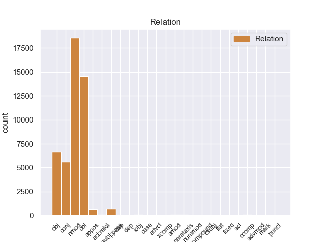
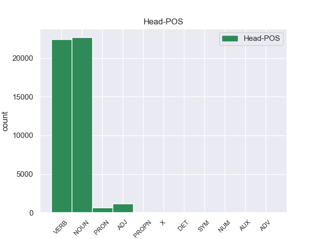
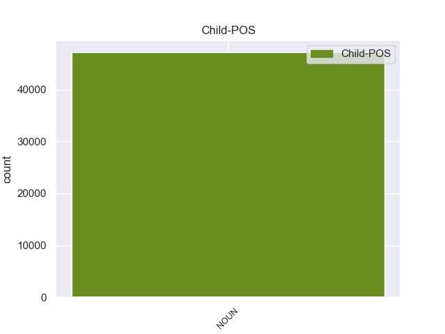

Distribution of features within this leaf



Agreement Rules sorted by frequency.
- When the dependent token is the nominal modifier(nmod) of the head token, and the head token is NOUN and the dependent token is NOUN.
1 En _ _ _ _ 0 _ _ _
2 1991 _ _ _ _ 0 _ _ _
3 , _ _ _ _ 0 _ _ _
4 como _ _ _ _ 0 _ _ _
5 ya _ _ _ _ 0 _ _ _
6 está _ _ _ _ 0 _ _ _
7 indicado _ _ _ _ 0 _ _ _
8 en _ _ _ _ 0 _ _ _
9 el _ _ _ _ 0 _ _ _
10 párrafo _ _ _ _ 0 _ _ _
11 anterior _ _ _ _ 0 _ _ _
12 , _ _ _ _ 0 _ _ _
13 se _ _ _ _ 0 _ _ _
14 creó _ _ _ _ 0 _ _ _
15 un _ _ _ _ 0 _ _ _
16 equipo _ _ _ _ 0 _ _ _
17 ad _ _ _ _ 0 _ _ _
18 hoc _ _ _ _ 0 _ _ _
19 para _ _ _ _ 0 _ _ _
20 averiguar _ _ _ _ 0 _ _ _
21 como _ _ _ _ 0 _ _ _
22 se _ _ _ _ 0 _ _ _
23 podía _ _ _ _ 0 _ _ _
24 desarrollar _ _ _ _ 0 _ _ _
25 el _ _ _ _ 0 _ _ _
26 Dialogo _ _ _ _ 0 _ _ _
27 Social _ _ _ _ 0 _ _ _
28 , _ _ _ _ 0 _ _ _
29 este _ _ _ _ 0 _ _ _
30 equipo _ _ _ _ 0 _ _ _
31 estaba _ _ _ _ 0 _ _ _
32 formado _ _ _ _ 0 _ _ _
33 por _ _ _ _ 0 _ _ _
34 representantes representante NOUN _ Gender=Masc|Number=Plur 0 _ _ _
35 de _ _ _ _ 0 _ _ _
36 todas _ _ _ _ 0 _ _ _
37 las _ _ _ _ 0 _ _ _
38 organizaciones organizacione NOUN _ Gender=Fem|Number=Plur 34 nmod _ _
39 relacionadas _ _ _ _ 0 _ _ _
40 con _ _ _ _ 0 _ _ _
41 CES _ _ _ _ 0 _ _ _
42 , _ _ _ _ 0 _ _ _
43 UNICE _ _ _ _ 0 _ _ _
44 y _ _ _ _ 0 _ _ _
45 CEEP _ _ _ _ 0 _ _ _
46 ; _ _ _ _ 0 _ _ _
1 En _ _ _ _ 0 _ _ _
2 1991 _ _ _ _ 0 _ _ _
3 , _ _ _ _ 0 _ _ _
4 como _ _ _ _ 0 _ _ _
5 ya _ _ _ _ 0 _ _ _
6 está _ _ _ _ 0 _ _ _
7 indicado indicar VERB _ Gender=Masc|Number=Sing|Tense=Past|VerbForm=Part 0 _ _ _
8 en _ _ _ _ 0 _ _ _
9 el _ _ _ _ 0 _ _ _
10 párrafo párrafo NOUN _ Gender=Masc|Number=Sing 7 obl _ _
11 anterior _ _ _ _ 0 _ _ _
12 , _ _ _ _ 0 _ _ _
13 se _ _ _ _ 0 _ _ _
14 creó _ _ _ _ 0 _ _ _
15 un _ _ _ _ 0 _ _ _
16 equipo _ _ _ _ 0 _ _ _
17 ad _ _ _ _ 0 _ _ _
18 hoc _ _ _ _ 0 _ _ _
19 para _ _ _ _ 0 _ _ _
20 averiguar _ _ _ _ 0 _ _ _
21 como _ _ _ _ 0 _ _ _
22 se _ _ _ _ 0 _ _ _
23 podía _ _ _ _ 0 _ _ _
24 desarrollar _ _ _ _ 0 _ _ _
25 el _ _ _ _ 0 _ _ _
26 Dialogo _ _ _ _ 0 _ _ _
27 Social _ _ _ _ 0 _ _ _
28 , _ _ _ _ 0 _ _ _
29 este _ _ _ _ 0 _ _ _
30 equipo _ _ _ _ 0 _ _ _
31 estaba _ _ _ _ 0 _ _ _
32 formado _ _ _ _ 0 _ _ _
33 por _ _ _ _ 0 _ _ _
34 representantes _ _ _ _ 0 _ _ _
35 de _ _ _ _ 0 _ _ _
36 todas _ _ _ _ 0 _ _ _
37 las _ _ _ _ 0 _ _ _
38 organizaciones _ _ _ _ 0 _ _ _
39 relacionadas _ _ _ _ 0 _ _ _
40 con _ _ _ _ 0 _ _ _
41 CES _ _ _ _ 0 _ _ _
42 , _ _ _ _ 0 _ _ _
43 UNICE _ _ _ _ 0 _ _ _
44 y _ _ _ _ 0 _ _ _
45 CEEP _ _ _ _ 0 _ _ _
46 ; _ _ _ _ 0 _ _ _
1 Una _ _ _ _ 0 _ _ _
2 vez _ _ _ _ 0 _ _ _
3 que _ _ _ _ 0 _ _ _
4 el _ _ _ _ 0 _ _ _
5 Hijo _ _ _ _ 0 _ _ _
6 de _ _ _ _ 0 _ _ _
7 Krypton _ _ _ _ 0 _ _ _
8 suelta sueltar VERB _ Mood=Ind|Number=Sing|Person=3|Tense=Pres|VerbForm=Fin 0 _ _ _
9 el _ _ _ _ 0 _ _ _
10 misil misil NOUN _ Gender=Masc|Number=Sing 8 obj _ _
11 , _ _ _ _ 0 _ _ _
12 este _ _ _ _ 0 _ _ _
13 intenta _ _ _ _ 0 _ _ _
14 huir _ _ _ _ 0 _ _ _
15 de _ _ _ _ 0 _ _ _
16 el _ _ _ _ 0 _ _ _
17 lugar _ _ _ _ 0 _ _ _
18 pero _ _ _ _ 0 _ _ _
19 es _ _ _ _ 0 _ _ _
20 atrapado _ _ _ _ 0 _ _ _
21 en _ _ _ _ 0 _ _ _
22 la _ _ _ _ 0 _ _ _
23 explosión _ _ _ _ 0 _ _ _
24 . _ _ _ _ 0 _ _ _
1 Esta _ _ _ _ 0 _ _ _
2 teoría _ _ _ _ 0 _ _ _
3 se _ _ _ _ 0 _ _ _
4 avenía _ _ _ _ 0 _ _ _
5 bien _ _ _ _ 0 _ _ _
6 con _ _ _ _ 0 _ _ _
7 la _ _ _ _ 0 _ _ _
8 creencia _ _ _ _ 0 _ _ _
9 de _ _ _ _ 0 _ _ _
10 el _ _ _ _ 0 _ _ _
11 Romanticismo _ _ _ _ 0 _ _ _
12 en _ _ _ _ 0 _ _ _
13 un _ _ _ _ 0 _ _ _
14 volkgeist _ _ _ _ 0 _ _ _
15 , _ _ _ _ 0 _ _ _
16 " _ _ _ _ 0 _ _ _
17 genio _ _ _ _ 0 _ _ _
18 o _ _ _ _ 0 _ _ _
19 espíritu _ _ _ _ 0 _ _ _
20 de _ _ _ _ 0 _ _ _
21 el _ _ _ _ 0 _ _ _
22 pueblo _ _ _ _ 0 _ _ _
23 " _ _ _ _ 0 _ _ _
24 , _ _ _ _ 0 _ _ _
25 autor autor NOUN _ Gender=Masc|Number=Sing 0 _ _ _
26 colectivo _ _ _ _ 0 _ _ _
27 y _ _ _ _ 0 _ _ _
28 anónimo anónimo NOUN _ Gender=Masc|Number=Sing 25 conj _ _
29 de _ _ _ _ 0 _ _ _
30 una _ _ _ _ 0 _ _ _
31 poesía _ _ _ _ 0 _ _ _
32 nacional _ _ _ _ 0 _ _ _
33 . _ _ _ _ 0 _ _ _
1 En _ _ _ _ 0 _ _ _
2 1991 _ _ _ _ 0 _ _ _
3 , _ _ _ _ 0 _ _ _
4 como _ _ _ _ 0 _ _ _
5 ya _ _ _ _ 0 _ _ _
6 está _ _ _ _ 0 _ _ _
7 indicado _ _ _ _ 0 _ _ _
8 en _ _ _ _ 0 _ _ _
9 el _ _ _ _ 0 _ _ _
10 párrafo _ _ _ _ 0 _ _ _
11 anterior _ _ _ _ 0 _ _ _
12 , _ _ _ _ 0 _ _ _
13 se _ _ _ _ 0 _ _ _
14 creó _ _ _ _ 0 _ _ _
15 un _ _ _ _ 0 _ _ _
16 equipo _ _ _ _ 0 _ _ _
17 ad _ _ _ _ 0 _ _ _
18 hoc _ _ _ _ 0 _ _ _
19 para _ _ _ _ 0 _ _ _
20 averiguar _ _ _ _ 0 _ _ _
21 como _ _ _ _ 0 _ _ _
22 se _ _ _ _ 0 _ _ _
23 podía _ _ _ _ 0 _ _ _
24 desarrollar _ _ _ _ 0 _ _ _
25 el _ _ _ _ 0 _ _ _
26 Dialogo _ _ _ _ 0 _ _ _
27 Social _ _ _ _ 0 _ _ _
28 , _ _ _ _ 0 _ _ _
29 este _ _ _ _ 0 _ _ _
30 equipo equipo NOUN _ Gender=Masc|Number=Sing 32 nsubj:pass _ _
31 estaba _ _ _ _ 0 _ _ _
32 formado formar VERB _ Gender=Masc|Number=Sing|VerbForm=Part 0 _ _ _
33 por _ _ _ _ 0 _ _ _
34 representantes _ _ _ _ 0 _ _ _
35 de _ _ _ _ 0 _ _ _
36 todas _ _ _ _ 0 _ _ _
37 las _ _ _ _ 0 _ _ _
38 organizaciones _ _ _ _ 0 _ _ _
39 relacionadas _ _ _ _ 0 _ _ _
40 con _ _ _ _ 0 _ _ _
41 CES _ _ _ _ 0 _ _ _
42 , _ _ _ _ 0 _ _ _
43 UNICE _ _ _ _ 0 _ _ _
44 y _ _ _ _ 0 _ _ _
45 CEEP _ _ _ _ 0 _ _ _
46 ; _ _ _ _ 0 _ _ _
1 Esta _ _ _ _ 0 _ _ _
2 teoría _ _ _ _ 0 _ _ _
3 se _ _ _ _ 0 _ _ _
4 avenía _ _ _ _ 0 _ _ _
5 bien _ _ _ _ 0 _ _ _
6 con _ _ _ _ 0 _ _ _
7 la _ _ _ _ 0 _ _ _
8 creencia _ _ _ _ 0 _ _ _
9 de _ _ _ _ 0 _ _ _
10 el _ _ _ _ 0 _ _ _
11 Romanticismo _ _ _ _ 0 _ _ _
12 en _ _ _ _ 0 _ _ _
13 un _ _ _ _ 0 _ _ _
14 volkgeist volkgeist NOUN _ Gender=Masc|Number=Sing 0 _ _ _
15 , _ _ _ _ 0 _ _ _
16 " _ _ _ _ 0 _ _ _
17 genio _ _ _ _ 0 _ _ _
18 o _ _ _ _ 0 _ _ _
19 espíritu _ _ _ _ 0 _ _ _
20 de _ _ _ _ 0 _ _ _
21 el _ _ _ _ 0 _ _ _
22 pueblo _ _ _ _ 0 _ _ _
23 " _ _ _ _ 0 _ _ _
24 , _ _ _ _ 0 _ _ _
25 autor autor NOUN _ Gender=Masc|Number=Sing 14 appos _ _
26 colectivo _ _ _ _ 0 _ _ _
27 y _ _ _ _ 0 _ _ _
28 anónimo _ _ _ _ 0 _ _ _
29 de _ _ _ _ 0 _ _ _
30 una _ _ _ _ 0 _ _ _
31 poesía _ _ _ _ 0 _ _ _
32 nacional _ _ _ _ 0 _ _ _
33 . _ _ _ _ 0 _ _ _
1 San _ _ _ _ 0 _ _ _
2 Julián _ _ _ _ 0 _ _ _
3 de _ _ _ _ 0 _ _ _
4 Morcelle _ _ _ _ 0 _ _ _
5 ( _ _ _ _ 0 _ _ _
6 en _ _ _ _ 0 _ _ _
7 gallego _ _ _ _ 0 _ _ _
8 : _ _ _ _ 0 _ _ _
9 San _ _ _ _ 0 _ _ _
10 Xulián _ _ _ _ 0 _ _ _
11 de _ _ _ _ 0 _ _ _
12 Morcelle _ _ _ _ 0 _ _ _
13 ) _ _ _ _ 0 _ _ _
14 o _ _ _ _ 0 _ _ _
15 simplemente _ _ _ _ 0 _ _ _
16 Morcelle _ _ _ _ 0 _ _ _
17 , _ _ _ _ 0 _ _ _
18 es _ _ _ _ 0 _ _ _
19 una _ _ _ _ 0 _ _ _
20 parroquia _ _ _ _ 0 _ _ _
21 perteneciente perteneciente ADJ _ Gender=Fem|Number=Sing|VerbForm=Part 0 _ _ _
22 a _ _ _ _ 0 _ _ _
23 el _ _ _ _ 0 _ _ _
24 municipio municipio NOUN _ Gender=Masc|Number=Sing 21 nmod _ _
25 de _ _ _ _ 0 _ _ _
26 Becerreá _ _ _ _ 0 _ _ _
27 , _ _ _ _ 0 _ _ _
28 en _ _ _ _ 0 _ _ _
29 la _ _ _ _ 0 _ _ _
30 provincia _ _ _ _ 0 _ _ _
31 de _ _ _ _ 0 _ _ _
32 Lugo _ _ _ _ 0 _ _ _
33 , _ _ _ _ 0 _ _ _
34 Galicia _ _ _ _ 0 _ _ _
35 ( _ _ _ _ 0 _ _ _
36 España _ _ _ _ 0 _ _ _
37 ) _ _ _ _ 0 _ _ _
38 . _ _ _ _ 0 _ _ _
1 A _ _ _ _ 0 _ _ _
2 continuación _ _ _ _ 0 _ _ _
3 , _ _ _ _ 0 _ _ _
4 sonarán sonar VERB _ Mood=Ind|Number=Plur|Person=3|Tense=Pres|VerbForm=Fin 0 _ _ _
5 los _ _ _ _ 0 _ _ _
6 ritmos _ _ _ _ 0 _ _ _
7 más _ _ _ _ 0 _ _ _
8 intensos _ _ _ _ 0 _ _ _
9 de _ _ _ _ 0 _ _ _
10 los _ _ _ _ 0 _ _ _
11 llanos _ _ _ _ 0 _ _ _
12 interpretados _ _ _ _ 0 _ _ _
13 por _ _ _ _ 0 _ _ _
14 una _ _ _ _ 0 _ _ _
15 agrupación _ _ _ _ 0 _ _ _
16 que _ _ _ _ 0 _ _ _
17 romperá _ _ _ _ 0 _ _ _
18 esquemas _ _ _ _ 0 _ _ _
19 : _ _ _ _ 0 _ _ _
20 el _ _ _ _ 0 _ _ _
21 Ensamble _ _ _ _ 0 _ _ _
22 de _ _ _ _ 0 _ _ _
23 Arpas _ _ _ _ 0 _ _ _
24 de _ _ _ _ 0 _ _ _
25 la _ _ _ _ 0 _ _ _
26 Orquesta _ _ _ _ 0 _ _ _
27 de _ _ _ _ 0 _ _ _
28 Música _ _ _ _ 0 _ _ _
29 Popular _ _ _ _ 0 _ _ _
30 de _ _ _ _ 0 _ _ _
31 el _ _ _ _ 0 _ _ _
32 Estado _ _ _ _ 0 _ _ _
33 Guárico _ _ _ _ 0 _ _ _
34 , _ _ _ _ 0 _ _ _
35 integrado _ _ _ _ 0 _ _ _
36 por _ _ _ _ 0 _ _ _
37 14 _ _ _ _ 0 _ _ _
38 ejecutantes _ _ _ _ 0 _ _ _
39 , _ _ _ _ 0 _ _ _
40 todos _ _ _ _ 0 _ _ _
41 formados _ _ _ _ 0 _ _ _
42 por _ _ _ _ 0 _ _ _
43 El _ _ _ _ 0 _ _ _
44 Sistema _ _ _ _ 0 _ _ _
45 , _ _ _ _ 0 _ _ _
46 siendo _ _ _ _ 0 _ _ _
47 algunos _ _ _ _ 0 _ _ _
48 de _ _ _ _ 0 _ _ _
49 ellos _ _ _ _ 0 _ _ _
50 ganadores ganadore NOUN _ Gender=Masc|Number=Plur 4 conj _ _
51 de _ _ _ _ 0 _ _ _
52 el _ _ _ _ 0 _ _ _
53 reconocido _ _ _ _ 0 _ _ _
54 Festival _ _ _ _ 0 _ _ _
55 Internacional _ _ _ _ 0 _ _ _
56 de _ _ _ _ 0 _ _ _
57 Arpas _ _ _ _ 0 _ _ _
58 Infantil _ _ _ _ 0 _ _ _
59 y _ _ _ _ 0 _ _ _
60 Adultos _ _ _ _ 0 _ _ _
61 de _ _ _ _ 0 _ _ _
62 Villavicencio _ _ _ _ 0 _ _ _
63 , _ _ _ _ 0 _ _ _
64 Colombia _ _ _ _ 0 _ _ _
65 . _ _ _ _ 0 _ _ _
1 De _ _ _ _ 0 _ _ _
2 las _ _ _ _ 0 _ _ _
3 8 _ _ _ _ 0 _ _ _
4 porciones _ _ _ _ 0 _ _ _
5 , _ _ _ _ 0 _ _ _
6 cuatro _ _ _ _ 0 _ _ _
7 correspondieron _ _ _ _ 0 _ _ _
8 a _ _ _ _ 0 _ _ _
9 el _ _ _ _ 0 _ _ _
10 rey _ _ _ _ 0 _ _ _
11 , _ _ _ _ 0 _ _ _
12 una _ _ _ _ 0 _ _ _
13 a _ _ _ _ 0 _ _ _
14 el _ _ _ _ 0 _ _ _
15 conde _ _ _ _ 0 _ _ _
16 de _ _ _ _ 0 _ _ _
17 el _ _ _ _ 0 _ _ _
18 Rosellón _ _ _ _ 0 _ _ _
19 Nuño _ _ _ _ 0 _ _ _
20 Sánchez _ _ _ _ 0 _ _ _
21 , _ _ _ _ 0 _ _ _
22 una _ _ _ _ 0 _ _ _
23 a _ _ _ _ 0 _ _ _
24 el _ _ _ _ 0 _ _ _
25 obispo _ _ _ _ 0 _ _ _
26 de _ _ _ _ 0 _ _ _
27 Barcelona _ _ _ _ 0 _ _ _
28 Berenguer _ _ _ _ 0 _ _ _
29 de _ _ _ _ 0 _ _ _
30 Palou _ _ _ _ 0 _ _ _
31 , _ _ _ _ 0 _ _ _
32 una _ _ _ _ 0 _ _ _
33 a _ _ _ _ 0 _ _ _
34 el _ _ _ _ 0 _ _ _
35 Conde _ _ _ _ 0 _ _ _
36 de _ _ _ _ 0 _ _ _
37 Ampurias _ _ _ _ 0 _ _ _
38 y _ _ _ _ 0 _ _ _
39 finalmente _ _ _ _ 0 _ _ _
40 otra otro PRON _ Gender=Fem|Number=Sing|PronType=Ind 0 _ _ _
41 a _ _ _ _ 0 _ _ _
42 el _ _ _ _ 0 _ _ _
43 vizconde vizconde NOUN _ Gender=Masc|Number=Sing 40 nmod _ _
44 de _ _ _ _ 0 _ _ _
45 Bearn _ _ _ _ 0 _ _ _
46 . _ _ _ _ 0 _ _ _
1 Del _ _ _ _ 0 _ _ _
2 total _ _ _ _ 0 _ _ _
3 de _ _ _ _ 0 _ _ _
4 la _ _ _ _ 0 _ _ _
5 población _ _ _ _ 0 _ _ _
6 el _ _ _ _ 0 _ _ _
7 7.18 _ _ _ _ 0 _ _ _
8 % _ _ _ _ 0 _ _ _
9 eran _ _ _ _ 0 _ _ _
10 hispanos hispano ADJ _ Gender=Masc|Number=Plur 0 _ _ _
11 o _ _ _ _ 0 _ _ _
12 latinos latino NOUN _ Gender=Masc|Number=Plur 10 conj _ _
13 de _ _ _ _ 0 _ _ _
14 cualquier _ _ _ _ 0 _ _ _
15 raza _ _ _ _ 0 _ _ _
16 . _ _ _ _ 0 _ _ _
1 En _ _ _ _ 0 _ _ _
2 estos _ _ _ _ 0 _ _ _
3 trabajos _ _ _ _ 0 _ _ _
4 se _ _ _ _ 0 _ _ _
5 pusieron _ _ _ _ 0 _ _ _
6 a _ _ _ _ 0 _ _ _
7 el _ _ _ _ 0 _ _ _
8 descubierto _ _ _ _ 0 _ _ _
9 25 _ _ _ _ 0 _ _ _
10 vanos _ _ _ _ 0 _ _ _
11 correspondientes correspondiente ADJ _ Number=Plur 0 _ _ _
12 a _ _ _ _ 0 _ _ _
13 ventanas ventana NOUN _ Gender=Fem|Number=Plur 11 obl _ _
14 saeteras _ _ _ _ 0 _ _ _
15 que _ _ _ _ 0 _ _ _
16 habían _ _ _ _ 0 _ _ _
17 sido _ _ _ _ 0 _ _ _
18 tapiadas _ _ _ _ 0 _ _ _
19 en _ _ _ _ 0 _ _ _
20 los _ _ _ _ 0 _ _ _
21 siglos _ _ _ _ 0 _ _ _
22 anteriores _ _ _ _ 0 _ _ _
23 . _ _ _ _ 0 _ _ _
1 En _ _ _ _ 0 _ _ _
2 1984 _ _ _ _ 0 _ _ _
3 , _ _ _ _ 0 _ _ _
4 la _ _ _ _ 0 _ _ _
5 nominación _ _ _ _ 0 _ _ _
6 de _ _ _ _ 0 _ _ _
7 el _ _ _ _ 0 _ _ _
8 eminente eminente NOUN _ Gender=Masc|Number=Sing 9 amod _ _
9 polemista polemista NOUN _ Gender=Masc|Number=Sing 0 _ _ _
10 Hugo _ _ _ _ 0 _ _ _
11 Brandt _ _ _ _ 0 _ _ _
12 Corstius _ _ _ _ 0 _ _ _
13 por _ _ _ _ 0 _ _ _
14 el _ _ _ _ 0 _ _ _
15 jurado _ _ _ _ 0 _ _ _
16 provocó _ _ _ _ 0 _ _ _
17 tensiones _ _ _ _ 0 _ _ _
18 entre _ _ _ _ 0 _ _ _
19 la _ _ _ _ 0 _ _ _
20 fundación _ _ _ _ 0 _ _ _
21 independiente _ _ _ _ 0 _ _ _
22 y _ _ _ _ 0 _ _ _
23 el _ _ _ _ 0 _ _ _
24 Estado _ _ _ _ 0 _ _ _
25 . _ _ _ _ 0 _ _ _
1 La _ _ _ _ 0 _ _ _
2 victoria _ _ _ _ 0 _ _ _
3 costarricense _ _ _ _ 0 _ _ _
4 en _ _ _ _ 0 _ _ _
5 Santa _ _ _ _ 0 _ _ _
6 Rosa _ _ _ _ 0 _ _ _
7 permitió _ _ _ _ 0 _ _ _
8 la _ _ _ _ 0 _ _ _
9 expulsión _ _ _ _ 0 _ _ _
10 de _ _ _ _ 0 _ _ _
11 los _ _ _ _ 0 _ _ _
12 filibusteros _ _ _ _ 0 _ _ _
13 de _ _ _ _ 0 _ _ _
14 suelo _ _ _ _ 0 _ _ _
15 costarricense _ _ _ _ 0 _ _ _
16 , _ _ _ _ 0 _ _ _
17 trasladando _ _ _ _ 0 _ _ _
18 el _ _ _ _ 0 _ _ _
19 escenario _ _ _ _ 0 _ _ _
20 de _ _ _ _ 0 _ _ _
21 la _ _ _ _ 0 _ _ _
22 guerra _ _ _ _ 0 _ _ _
23 a _ _ _ _ 0 _ _ _
24 la _ _ _ _ 0 _ _ _
25 vecina _ _ _ _ 0 _ _ _
26 Nicaragua _ _ _ _ 0 _ _ _
27 , _ _ _ _ 0 _ _ _
28 en _ _ _ _ 0 _ _ _
29 el _ _ _ _ 0 _ _ _
30 marco _ _ _ _ 0 _ _ _
31 de _ _ _ _ 0 _ _ _
32 la _ _ _ _ 0 _ _ _
33 Guerra _ _ _ _ 0 _ _ _
34 Nacional _ _ _ _ 0 _ _ _
35 de _ _ _ _ 0 _ _ _
36 Nicaragua _ _ _ _ 0 _ _ _
37 , _ _ _ _ 0 _ _ _
38 a _ _ _ _ 0 _ _ _
39 la _ _ _ _ 0 _ _ _
40 vez _ _ _ _ 0 _ _ _
41 que _ _ _ _ 0 _ _ _
42 llena llenar VERB _ Mood=Ind|Number=Sing|Person=3|Tense=Pres|VerbForm=Fin 0 _ _ _
43 de _ _ _ _ 0 _ _ _
44 optimismo _ _ _ _ 0 _ _ _
45 a _ _ _ _ 0 _ _ _
46 el _ _ _ _ 0 _ _ _
47 ejército ejército NOUN _ Gender=Masc|Number=Sing 42 nmod _ _
48 expedicionario _ _ _ _ 0 _ _ _
49 costarricense _ _ _ _ 0 _ _ _
50 . _ _ _ _ 0 _ _ _
1 Covada _ _ _ _ 0 _ _ _
2 ( _ _ _ _ 0 _ _ _
3 de _ _ _ _ 0 _ _ _
4 el _ _ _ _ 0 _ _ _
5 francés _ _ _ _ 0 _ _ _
6 couver _ _ _ _ 0 _ _ _
7 ' _ _ _ _ 0 _ _ _
8 incubar _ _ _ _ 0 _ _ _
9 ' _ _ _ _ 0 _ _ _
10 ) _ _ _ _ 0 _ _ _
11 , _ _ _ _ 0 _ _ _
12 costumbre _ _ _ _ 0 _ _ _
13 por _ _ _ _ 0 _ _ _
14 la _ _ _ _ 0 _ _ _
15 que _ _ _ _ 0 _ _ _
16 la _ _ _ _ 0 _ _ _
17 madre _ _ _ _ 0 _ _ _
18 , _ _ _ _ 0 _ _ _
19 durante _ _ _ _ 0 _ _ _
20 el _ _ _ _ 0 _ _ _
21 nacimiento _ _ _ _ 0 _ _ _
22 de _ _ _ _ 0 _ _ _
23 un _ _ _ _ 0 _ _ _
24 hijo _ _ _ _ 0 _ _ _
25 o _ _ _ _ 0 _ _ _
26 inmediatamente _ _ _ _ 0 _ _ _
27 después _ _ _ _ 0 _ _ _
28 , _ _ _ _ 0 _ _ _
29 le _ _ _ _ 0 _ _ _
30 cede ceder VERB _ Mood=Ind|Number=Sing|Person=3|Tense=Pres|VerbForm=Fin 0 _ _ _
31 el _ _ _ _ 0 _ _ _
32 lecho _ _ _ _ 0 _ _ _
33 a _ _ _ _ 0 _ _ _
34 el _ _ _ _ 0 _ _ _
35 padre padre NOUN _ Gender=Masc|Number=Sing 30 iobj _ _
36 . _ _ _ _ 0 _ _ _
1 Cuenta _ _ _ _ 0 _ _ _
2 las _ _ _ _ 0 _ _ _
3 azarosas _ _ _ _ 0 _ _ _
4 e _ _ _ _ 0 _ _ _
5 intrépidas _ _ _ _ 0 _ _ _
6 aventuras _ _ _ _ 0 _ _ _
7 de _ _ _ _ 0 _ _ _
8 un _ _ _ _ 0 _ _ _
9 pequeño _ _ _ _ 0 _ _ _
10 mago mago NOUN _ Gender=Masc|Number=Sing 0 _ _ _
11 llamado _ _ _ _ 0 _ _ _
12 Bieto _ _ _ _ 0 _ _ _
13 Dubidoso _ _ _ _ 0 _ _ _
14 que _ _ _ _ 0 _ _ _
15 se _ _ _ _ 0 _ _ _
16 declara _ _ _ _ 0 _ _ _
17 prestidigitador prestidigitador NOUN _ Gender=Masc|Number=Sing 10 acl:relcl _ _
18 y _ _ _ _ 0 _ _ _
19 no _ _ _ _ 0 _ _ _
20 hechicero _ _ _ _ 0 _ _ _
21 ; _ _ _ _ 0 _ _ _
1 En _ _ _ _ 0 _ _ _
2 este _ _ _ _ 0 _ _ _
3 contexto _ _ _ _ 0 _ _ _
4 , _ _ _ _ 0 _ _ _
5 el _ _ _ _ 0 _ _ _
6 prelado _ _ _ _ 0 _ _ _
7 destacó destacar VERB _ Mood=Ind|Number=Sing|Person=3|Tense=Past|VerbForm=Fin 0 _ _ _
8 que _ _ _ _ 0 _ _ _
9 el _ _ _ _ 0 _ _ _
10 pueblo _ _ _ _ 0 _ _ _
11 santiagueño _ _ _ _ 0 _ _ _
12 es _ _ _ _ 0 _ _ _
13 " _ _ _ _ 0 _ _ _
14 modelo modelo NOUN _ Gender=Masc|Number=Sing 7 ccomp _ _
15 de _ _ _ _ 0 _ _ _
16 el _ _ _ _ 0 _ _ _
17 discípulo _ _ _ _ 0 _ _ _
18 misionero _ _ _ _ 0 _ _ _
19 que _ _ _ _ 0 _ _ _
20 todos _ _ _ _ 0 _ _ _
21 tenemos _ _ _ _ 0 _ _ _
22 que _ _ _ _ 0 _ _ _
23 ser _ _ _ _ 0 _ _ _
24 " _ _ _ _ 0 _ _ _
25 . _ _ _ _ 0 _ _ _
1 Uno _ _ _ _ 0 _ _ _
2 de _ _ _ _ 0 _ _ _
3 los _ _ _ _ 0 _ _ _
4 casos _ _ _ _ 0 _ _ _
5 más _ _ _ _ 0 _ _ _
6 extraños _ _ _ _ 0 _ _ _
7 y _ _ _ _ 0 _ _ _
8 más _ _ _ _ 0 _ _ _
9 enquistado _ _ _ _ 0 _ _ _
10 es _ _ _ _ 0 _ _ _
11 el _ _ _ _ 0 _ _ _
12 caso _ _ _ _ 0 _ _ _
13 de _ _ _ _ 0 _ _ _
14 el _ _ _ _ 0 _ _ _
15 bielorruso _ _ _ _ 0 _ _ _
16 Hleb _ _ _ _ 0 _ _ _
17 que _ _ _ _ 0 _ _ _
18 desde _ _ _ _ 0 _ _ _
19 que _ _ _ _ 0 _ _ _
20 fichó _ _ _ _ 0 _ _ _
21 por _ _ _ _ 0 _ _ _
22 el _ _ _ _ 0 _ _ _
23 club _ _ _ _ 0 _ _ _
24 no _ _ _ _ 0 _ _ _
25 ha _ _ _ _ 0 _ _ _
26 llegado llegar VERB _ Gender=Masc|Number=Sing|Tense=Past|VerbForm=Part 0 _ _ _
27 a _ _ _ _ 0 _ _ _
28 jugar _ _ _ _ 0 _ _ _
29 dos _ _ _ _ 0 _ _ _
30 partidos _ _ _ _ 0 _ _ _
31 seguidos _ _ _ _ 0 _ _ _
32 y _ _ _ _ 0 _ _ _
33 que _ _ _ _ 0 _ _ _
34 esta _ _ _ _ 0 _ _ _
35 es _ _ _ _ 0 _ _ _
36 la _ _ _ _ 0 _ _ _
37 ultima _ _ _ _ 0 _ _ _
38 temporada temporada NOUN _ Gender=Fem|Number=Sing 26 parataxis _ _
39 con _ _ _ _ 0 _ _ _
40 contrato _ _ _ _ 0 _ _ _
41 en _ _ _ _ 0 _ _ _
42 el _ _ _ _ 0 _ _ _
43 club _ _ _ _ 0 _ _ _
44 culé _ _ _ _ 0 _ _ _
45 , _ _ _ _ 0 _ _ _
46 y _ _ _ _ 0 _ _ _
47 que _ _ _ _ 0 _ _ _
48 finalizará _ _ _ _ 0 _ _ _
49 su _ _ _ _ 0 _ _ _
50 vinculación _ _ _ _ 0 _ _ _
51 como _ _ _ _ 0 _ _ _
52 cedido _ _ _ _ 0 _ _ _
53 en _ _ _ _ 0 _ _ _
54 el _ _ _ _ 0 _ _ _
55 Wolfburgo _ _ _ _ 0 _ _ _
56 alemán _ _ _ _ 0 _ _ _
57 . _ _ _ _ 0 _ _ _
1 Según _ _ _ _ 0 _ _ _
2 los _ _ _ _ 0 _ _ _
3 datos _ _ _ _ 0 _ _ _
4 de _ _ _ _ 0 _ _ _
5 la _ _ _ _ 0 _ _ _
6 Generalitat _ _ _ _ 0 _ _ _
7 Valenciana _ _ _ _ 0 _ _ _
8 , _ _ _ _ 0 _ _ _
9 durante _ _ _ _ 0 _ _ _
10 los _ _ _ _ 0 _ _ _
11 meses mese NOUN _ Gender=Masc|Number=Plur 14 obl _ _
12 de _ _ _ _ 0 _ _ _
13 verano _ _ _ _ 0 _ _ _
14 son ser AUX _ Mood=Ind|Number=Plur|Person=3|Tense=Pres|VerbForm=Fin 0 _ _ _
15 cerca _ _ _ _ 0 _ _ _
16 de _ _ _ _ 0 _ _ _
17 1.000 _ _ _ _ 0 _ _ _
18 las _ _ _ _ 0 _ _ _
19 personas _ _ _ _ 0 _ _ _
20 que _ _ _ _ 0 _ _ _
21 cada _ _ _ _ 0 _ _ _
22 semana _ _ _ _ 0 _ _ _
23 disfrutan _ _ _ _ 0 _ _ _
24 de _ _ _ _ 0 _ _ _
25 estas _ _ _ _ 0 _ _ _
26 zonas _ _ _ _ 0 _ _ _
27 recreativas _ _ _ _ 0 _ _ _
28 . _ _ _ _ 0 _ _ _
1 Evan _ _ _ _ 0 _ _ _
2 Baxter _ _ _ _ 0 _ _ _
3 ( _ _ _ _ 0 _ _ _
4 Steve _ _ _ _ 0 _ _ _
5 Carell _ _ _ _ 0 _ _ _
6 ) _ _ _ _ 0 _ _ _
7 , _ _ _ _ 0 _ _ _
8 antiguo _ _ _ _ 0 _ _ _
9 enemigo _ _ _ _ 0 _ _ _
10 de _ _ _ _ 0 _ _ _
11 Bruce _ _ _ _ 0 _ _ _
12 Nolan _ _ _ _ 0 _ _ _
13 ( _ _ _ _ 0 _ _ _
14 Jim _ _ _ _ 0 _ _ _
15 Carrey _ _ _ _ 0 _ _ _
16 ) _ _ _ _ 0 _ _ _
17 , _ _ _ _ 0 _ _ _
18 ahora _ _ _ _ 0 _ _ _
19 quiere quierer VERB _ Mood=Ind|Number=Sing|Person=3|Tense=Pres|VerbForm=Fin 0 _ _ _
20 ser _ _ _ _ 0 _ _ _
21 congresista congresista NOUN _ Gender=Masc|Number=Sing 19 xcomp _ _
22 . _ _ _ _ 0 _ _ _
1 Sin _ _ _ _ 0 _ _ _
2 embargo _ _ _ _ 0 _ _ _
3 , _ _ _ _ 0 _ _ _
4 estas este PRON _ Gender=Fem|Number=Plur|PronType=Dem 0 _ _ _
5 y _ _ _ _ 0 _ _ _
6 otras _ _ _ _ 0 _ _ _
7 obras obra NOUN _ Gender=Fem|Number=Plur 4 conj _ _
8 suyas _ _ _ _ 0 _ _ _
9 de _ _ _ _ 0 _ _ _
10 música _ _ _ _ 0 _ _ _
11 de _ _ _ _ 0 _ _ _
12 cámara _ _ _ _ 0 _ _ _
13 fueron _ _ _ _ 0 _ _ _
14 muy _ _ _ _ 0 _ _ _
15 demandadas _ _ _ _ 0 _ _ _
16 , _ _ _ _ 0 _ _ _
17 por _ _ _ _ 0 _ _ _
18 su _ _ _ _ 0 _ _ _
19 originalidad _ _ _ _ 0 _ _ _
20 y _ _ _ _ 0 _ _ _
21 nobleza _ _ _ _ 0 _ _ _
22 . _ _ _ _ 0 _ _ _
1 Aragón aragón PROPN _ Gender=Masc|Number=Sing 0 _ _ _
2 y _ _ _ _ 0 _ _ _
3 contraterciado contraterciado NOUN _ Gender=Masc|Number=Sing 1 conj _ _
4 de _ _ _ _ 0 _ _ _
5 Hungría _ _ _ _ 0 _ _ _
6 , _ _ _ _ 0 _ _ _
7 Anjou _ _ _ _ 0 _ _ _
8 - _ _ _ _ 0 _ _ _
9 Nápoles _ _ _ _ 0 _ _ _
10 y _ _ _ _ 0 _ _ _
11 Jerusalén _ _ _ _ 0 _ _ _
12 . _ _ _ _ 0 _ _ _
1 La _ _ _ _ 0 _ _ _
2 presencia _ _ _ _ 0 _ _ _
3 de _ _ _ _ 0 _ _ _
4 la _ _ _ _ 0 _ _ _
5 Estación _ _ _ _ 0 _ _ _
6 genera _ _ _ _ 0 _ _ _
7 actividad _ _ _ _ 0 _ _ _
8 hotelera _ _ _ _ 0 _ _ _
9 , _ _ _ _ 0 _ _ _
10 haciendo _ _ _ _ 0 _ _ _
11 que _ _ _ _ 0 _ _ _
12 dos dos NUM _ Number=Plur|NumType=Card 0 _ _ _
13 de _ _ _ _ 0 _ _ _
14 los _ _ _ _ 0 _ _ _
15 primeros _ _ _ _ 0 _ _ _
16 hoteles hotel NOUN _ Gender=Masc|Number=Plur 12 nmod _ _
17 de _ _ _ _ 0 _ _ _
18 lujo _ _ _ _ 0 _ _ _
19 en _ _ _ _ 0 _ _ _
20 la _ _ _ _ 0 _ _ _
21 ciudad _ _ _ _ 0 _ _ _
22 se _ _ _ _ 0 _ _ _
23 instalen _ _ _ _ 0 _ _ _
24 en _ _ _ _ 0 _ _ _
25 las _ _ _ _ 0 _ _ _
26 cercanías _ _ _ _ 0 _ _ _
27 : _ _ _ _ 0 _ _ _
28 Hotel _ _ _ _ 0 _ _ _
29 Palace _ _ _ _ 0 _ _ _
30 y _ _ _ _ 0 _ _ _
31 Hotel _ _ _ _ 0 _ _ _
32 Ritz _ _ _ _ 0 _ _ _
33 . _ _ _ _ 0 _ _ _
1 Esto _ _ _ _ 0 _ _ _
2 causó _ _ _ _ 0 _ _ _
3 una _ _ _ _ 0 _ _ _
4 Guerra _ _ _ _ 0 _ _ _
5 Civil _ _ _ _ 0 _ _ _
6 conocida _ _ _ _ 0 _ _ _
7 como _ _ _ _ 0 _ _ _
8 Guerras guerras PROPN _ Gender=Fem|Number=Plur 0 _ _ _
9 Liberales _ _ _ _ 0 _ _ _
10 entre _ _ _ _ 0 _ _ _
11 los _ _ _ _ 0 _ _ _
12 absolutistas absolutist NOUN _ Gender=Masc|Number=Plur 8 nmod _ _
13 y _ _ _ _ 0 _ _ _
14 los _ _ _ _ 0 _ _ _
15 liberales _ _ _ _ 0 _ _ _
16 . _ _ _ _ 0 _ _ _
1 Cansado cansado NOUN _ Gender=Masc|Number=Sing|VerbForm=Part 46 advcl _ _
2 de _ _ _ _ 0 _ _ _
3 el _ _ _ _ 0 _ _ _
4 encasillamiento _ _ _ _ 0 _ _ _
5 que _ _ _ _ 0 _ _ _
6 le _ _ _ _ 0 _ _ _
7 produce _ _ _ _ 0 _ _ _
8 el _ _ _ _ 0 _ _ _
9 éxito _ _ _ _ 0 _ _ _
10 de _ _ _ _ 0 _ _ _
11 el _ _ _ _ 0 _ _ _
12 ' _ _ _ _ 0 _ _ _
13 Romancero _ _ _ _ 0 _ _ _
14 gitano _ _ _ _ 0 _ _ _
15 ' _ _ _ _ 0 _ _ _
16 y _ _ _ _ 0 _ _ _
17 de _ _ _ _ 0 _ _ _
18 ver _ _ _ _ 0 _ _ _
19 se _ _ _ _ 0 _ _ _
20 vinculado _ _ _ _ 0 _ _ _
21 a _ _ _ _ 0 _ _ _
22 " _ _ _ _ 0 _ _ _
23 un _ _ _ _ 0 _ _ _
24 tono _ _ _ _ 0 _ _ _
25 de _ _ _ _ 0 _ _ _
26 costumbrismo _ _ _ _ 0 _ _ _
27 e _ _ _ _ 0 _ _ _
28 incultura _ _ _ _ 0 _ _ _
29 " _ _ _ _ 0 _ _ _
30 que _ _ _ _ 0 _ _ _
31 siempre _ _ _ _ 0 _ _ _
32 trató _ _ _ _ 0 _ _ _
33 de _ _ _ _ 0 _ _ _
34 evitar _ _ _ _ 0 _ _ _
35 , _ _ _ _ 0 _ _ _
36 en _ _ _ _ 0 _ _ _
37 1929 _ _ _ _ 0 _ _ _
38 su _ _ _ _ 0 _ _ _
39 antiguo _ _ _ _ 0 _ _ _
40 profesor _ _ _ _ 0 _ _ _
41 Fernando _ _ _ _ 0 _ _ _
42 de _ _ _ _ 0 _ _ _
43 los _ _ _ _ 0 _ _ _
44 Ríos _ _ _ _ 0 _ _ _
45 le _ _ _ _ 0 _ _ _
46 ofrece ofrecer VERB _ Mood=Ind|Number=Sing|Person=3|Tense=Pres|VerbForm=Fin 0 _ _ _
47 la _ _ _ _ 0 _ _ _
48 oportunidad _ _ _ _ 0 _ _ _
49 de _ _ _ _ 0 _ _ _
50 acompañar _ _ _ _ 0 _ _ _
51 le _ _ _ _ 0 _ _ _
52 a _ _ _ _ 0 _ _ _
53 Nueva _ _ _ _ 0 _ _ _
54 York _ _ _ _ 0 _ _ _
55 . _ _ _ _ 0 _ _ _
1 Es _ _ _ _ 0 _ _ _
2 mencionado _ _ _ _ 0 _ _ _
3 por _ _ _ _ 0 _ _ _
4 primera _ _ _ _ 0 _ _ _
5 vez _ _ _ _ 0 _ _ _
6 en _ _ _ _ 0 _ _ _
7 el _ _ _ _ 0 _ _ _
8 cuento _ _ _ _ 0 _ _ _
9 The _ _ _ _ 0 _ _ _
10 hound hound PROPN _ Gender=Masc|Number=Sing 0 _ _ _
11 ( _ _ _ _ 0 _ _ _
12 El _ _ _ _ 0 _ _ _
13 sabueso sabueso NOUN _ Gender=Masc|Number=Sing 10 appos _ _
14 , _ _ _ _ 0 _ _ _
15 1922 _ _ _ _ 0 _ _ _
16 ) _ _ _ _ 0 _ _ _
17 . _ _ _ _ 0 _ _ _
1 Además _ _ _ _ 0 _ _ _
2 , _ _ _ _ 0 _ _ _
3 en _ _ _ _ 0 _ _ _
4 la _ _ _ _ 0 _ _ _
5 escuela _ _ _ _ 0 _ _ _
6 especializada _ _ _ _ 0 _ _ _
7 en _ _ _ _ 0 _ _ _
8 sushi _ _ _ _ 0 _ _ _
9 podrán _ _ _ _ 0 _ _ _
10 aprender _ _ _ _ 0 _ _ _
11 se _ _ _ _ 0 _ _ _
12 todos _ _ _ _ 0 _ _ _
13 los _ _ _ _ 0 _ _ _
14 secretos _ _ _ _ 0 _ _ _
15 para _ _ _ _ 0 _ _ _
16 preparar _ _ _ _ 0 _ _ _
17 este _ _ _ _ 0 _ _ _
18 exquisito _ _ _ _ 0 _ _ _
19 plato _ _ _ _ 0 _ _ _
20 , _ _ _ _ 0 _ _ _
21 gracias gracias NOUN _ Gender=Fem|Number=Plur 24 case _ _
22 a _ _ _ _ 0 _ _ _
23 los _ _ _ _ 0 _ _ _
24 cursos curso NOUN _ Gender=Masc|Number=Plur 0 _ _ _
25 , _ _ _ _ 0 _ _ _
26 talleres _ _ _ _ 0 _ _ _
27 y _ _ _ _ 0 _ _ _
28 programas _ _ _ _ 0 _ _ _
29 de _ _ _ _ 0 _ _ _
30 sushi _ _ _ _ 0 _ _ _
31 coaching _ _ _ _ 0 _ _ _
32 . _ _ _ _ 0 _ _ _
1 Iglesia iglesia NOUN _ Gender=Fem|Number=Sing 0 _ _ _
2 de _ _ _ _ 0 _ _ _
3 la _ _ _ _ 0 _ _ _
4 Natividad _ _ _ _ 0 _ _ _
5 de _ _ _ _ 0 _ _ _
6 Nuestra _ _ _ _ 0 _ _ _
7 Señora _ _ _ _ 0 _ _ _
8 , _ _ _ _ 0 _ _ _
9 dependiente dependiente NOUN _ Gender=Fem|Number=Sing 1 acl _ _
10 de _ _ _ _ 0 _ _ _
11 la _ _ _ _ 0 _ _ _
12 parroquia _ _ _ _ 0 _ _ _
13 de _ _ _ _ 0 _ _ _
14 Quintanapalla _ _ _ _ 0 _ _ _
15 en _ _ _ _ 0 _ _ _
16 el _ _ _ _ 0 _ _ _
17 Arcipestrazgo _ _ _ _ 0 _ _ _
18 de _ _ _ _ 0 _ _ _
19 San _ _ _ _ 0 _ _ _
20 Juan _ _ _ _ 0 _ _ _
21 de _ _ _ _ 0 _ _ _
22 Ortega _ _ _ _ 0 _ _ _
23 , _ _ _ _ 0 _ _ _
24 diócesis _ _ _ _ 0 _ _ _
25 de _ _ _ _ 0 _ _ _
26 Burgos _ _ _ _ 0 _ _ _
27 . _ _ _ _ 0 _ _ _
1 Se _ _ _ _ 0 _ _ _
2 cree creer VERB _ Mood=Ind|Number=Sing|Person=3|Tense=Pres|VerbForm=Fin 0 _ _ _
3 que _ _ _ _ 0 _ _ _
4 Buchnera _ _ _ _ 0 _ _ _
5 fue _ _ _ _ 0 _ _ _
6 una _ _ _ _ 0 _ _ _
7 vez _ _ _ _ 0 _ _ _
8 un _ _ _ _ 0 _ _ _
9 organismo organismo NOUN _ Gender=Masc|Number=Sing 2 csubj _ _
10 Gram _ _ _ _ 0 _ _ _
11 - _ _ _ _ 0 _ _ _
12 negativo _ _ _ _ 0 _ _ _
13 de _ _ _ _ 0 _ _ _
14 vida _ _ _ _ 0 _ _ _
15 libre _ _ _ _ 0 _ _ _
16 similar _ _ _ _ 0 _ _ _
17 a _ _ _ _ 0 _ _ _
18 los _ _ _ _ 0 _ _ _
19 modernos _ _ _ _ 0 _ _ _
20 Enterobacteriaceae _ _ _ _ 0 _ _ _
21 tales _ _ _ _ 0 _ _ _
22 como _ _ _ _ 0 _ _ _
23 Escherichia _ _ _ _ 0 _ _ _
24 coli _ _ _ _ 0 _ _ _
25 . _ _ _ _ 0 _ _ _
1 A _ _ _ _ 0 _ _ _
2 su _ _ _ _ 0 _ _ _
3 juicio juicio NOUN _ Gender=Masc|Number=Sing 8 nmod _ _
4 , _ _ _ _ 0 _ _ _
5 es _ _ _ _ 0 _ _ _
6 el _ _ _ _ 0 _ _ _
7 ayuntamiento _ _ _ _ 0 _ _ _
8 el el DET _ Definite=Def|Gender=Masc|Number=Sing|PronType=Art 0 _ _ _
9 que _ _ _ _ 0 _ _ _
10 decide _ _ _ _ 0 _ _ _
11 sobre _ _ _ _ 0 _ _ _
12 " _ _ _ _ 0 _ _ _
13 la _ _ _ _ 0 _ _ _
14 colocación _ _ _ _ 0 _ _ _
15 de _ _ _ _ 0 _ _ _
16 quioscos _ _ _ _ 0 _ _ _
17 , _ _ _ _ 0 _ _ _
18 puestos _ _ _ _ 0 _ _ _
19 de _ _ _ _ 0 _ _ _
20 castañas _ _ _ _ 0 _ _ _
21 , _ _ _ _ 0 _ _ _
22 flores _ _ _ _ 0 _ _ _
23 , _ _ _ _ 0 _ _ _
24 maceteros _ _ _ _ 0 _ _ _
25 , _ _ _ _ 0 _ _ _
26 bolardos _ _ _ _ 0 _ _ _
27 ... _ _ _ _ 0 _ _ _
28 en _ _ _ _ 0 _ _ _
29 cualquier _ _ _ _ 0 _ _ _
30 lugar _ _ _ _ 0 _ _ _
31 , _ _ _ _ 0 _ _ _
32 sea _ _ _ _ 0 _ _ _
33 BIC _ _ _ _ 0 _ _ _
34 ( _ _ _ _ 0 _ _ _
35 Bien _ _ _ _ 0 _ _ _
36 de _ _ _ _ 0 _ _ _
37 Interés _ _ _ _ 0 _ _ _
38 Cultural _ _ _ _ 0 _ _ _
39 ) _ _ _ _ 0 _ _ _
40 , _ _ _ _ 0 _ _ _
41 sea _ _ _ _ 0 _ _ _
42 centro _ _ _ _ 0 _ _ _
43 histórico _ _ _ _ 0 _ _ _
44 " _ _ _ _ 0 _ _ _
45 , _ _ _ _ 0 _ _ _
46 y _ _ _ _ 0 _ _ _
47 " _ _ _ _ 0 _ _ _
48 si _ _ _ _ 0 _ _ _
49 otras _ _ _ _ 0 _ _ _
50 personas _ _ _ _ 0 _ _ _
51 mantienen _ _ _ _ 0 _ _ _
52 otra _ _ _ _ 0 _ _ _
53 postura _ _ _ _ 0 _ _ _
54 alguien _ _ _ _ 0 _ _ _
55 nos _ _ _ _ 0 _ _ _
56 tendrá _ _ _ _ 0 _ _ _
57 que _ _ _ _ 0 _ _ _
58 decir _ _ _ _ 0 _ _ _
59 quién _ _ _ _ 0 _ _ _
60 tiene _ _ _ _ 0 _ _ _
61 razón _ _ _ _ 0 _ _ _
62 " _ _ _ _ 0 _ _ _
63 . _ _ _ _ 0 _ _ _
1 Si _ _ _ _ 0 _ _ _
2 el _ _ _ _ 0 _ _ _
3 país _ _ _ _ 0 _ _ _
4 debe _ _ _ _ 0 _ _ _
5 solicitar _ _ _ _ 0 _ _ _
6 el _ _ _ _ 0 _ _ _
7 ingreso _ _ _ _ 0 _ _ _
8 en _ _ _ _ 0 _ _ _
9 la _ _ _ _ 0 _ _ _
10 Unión _ _ _ _ 0 _ _ _
11 Europea _ _ _ _ 0 _ _ _
12 ha _ _ _ _ 0 _ _ _
13 sido _ _ _ _ 0 _ _ _
14 uno uno PRON _ Gender=Masc|Number=Sing|PronType=Ind 0 _ _ _
15 de _ _ _ _ 0 _ _ _
16 los _ _ _ _ 0 _ _ _
17 temas _ _ _ _ 0 _ _ _
18 más _ _ _ _ 0 _ _ _
19 dominantes _ _ _ _ 0 _ _ _
20 y _ _ _ _ 0 _ _ _
21 divisivos _ _ _ _ 0 _ _ _
22 en _ _ _ _ 0 _ _ _
23 Noruega _ _ _ _ 0 _ _ _
24 debate debate NOUN _ Gender=Masc|Number=Sing 14 appos _ _
25 político _ _ _ _ 0 _ _ _
26 y _ _ _ _ 0 _ _ _
27 económico _ _ _ _ 0 _ _ _
28 desde _ _ _ _ 0 _ _ _
29 la _ _ _ _ 0 _ _ _
30 Segunda _ _ _ _ 0 _ _ _
31 Guerra _ _ _ _ 0 _ _ _
32 Mundial _ _ _ _ 0 _ _ _
33 . _ _ _ _ 0 _ _ _
1 El _ _ _ _ 0 _ _ _
2 rey _ _ _ _ 0 _ _ _
3 sueco _ _ _ _ 0 _ _ _
4 pronto _ _ _ _ 0 _ _ _
5 advirtió _ _ _ _ 0 _ _ _
6 que _ _ _ _ 0 _ _ _
7 no _ _ _ _ 0 _ _ _
8 había haber AUX _ Mood=Ind|Number=Sing|Person=3|Tense=Imp|VerbForm=Fin 0 _ _ _
9 más _ _ _ _ 0 _ _ _
10 remedio remedio NOUN _ Gender=Masc|Number=Sing 8 obj _ _
11 que _ _ _ _ 0 _ _ _
12 enfrentar _ _ _ _ 0 _ _ _
13 se _ _ _ _ 0 _ _ _
14 a _ _ _ _ 0 _ _ _
15 el _ _ _ _ 0 _ _ _
16 mariscal _ _ _ _ 0 _ _ _
17 . _ _ _ _ 0 _ _ _
1 La _ _ _ _ 0 _ _ _
2 interacción _ _ _ _ 0 _ _ _
3 con _ _ _ _ 0 _ _ _
4 proteínas _ _ _ _ 0 _ _ _
5 celulares _ _ _ _ 0 _ _ _
6 , _ _ _ _ 0 _ _ _
7 en _ _ _ _ 0 _ _ _
8 especial _ _ _ _ 0 _ _ _
9 con _ _ _ _ 0 _ _ _
10 proteínas _ _ _ _ 0 _ _ _
11 de _ _ _ _ 0 _ _ _
12 el _ _ _ _ 0 _ _ _
13 grupo _ _ _ _ 0 _ _ _
14 de _ _ _ _ 0 _ _ _
15 alta _ _ _ _ 0 _ _ _
16 movilidad _ _ _ _ 0 _ _ _
17 , _ _ _ _ 0 _ _ _
18 también _ _ _ _ 0 _ _ _
19 se _ _ _ _ 0 _ _ _
20 ha _ _ _ _ 0 _ _ _
21 visto _ _ _ _ 0 _ _ _
22 como _ _ _ _ 0 _ _ _
23 un _ _ _ _ 0 _ _ _
24 mecanismo _ _ _ _ 0 _ _ _
25 de _ _ _ _ 0 _ _ _
26 interferencia _ _ _ _ 0 _ _ _
27 con _ _ _ _ 0 _ _ _
28 la _ _ _ _ 0 _ _ _
29 mitosis _ _ _ _ 0 _ _ _
30 , _ _ _ _ 0 _ _ _
31 aunque _ _ _ _ 0 _ _ _
32 es _ _ _ _ 0 _ _ _
33 probable probable ADJ _ Number=Sing 0 _ _ _
34 que _ _ _ _ 0 _ _ _
35 este _ _ _ _ 0 _ _ _
36 no _ _ _ _ 0 _ _ _
37 sea _ _ _ _ 0 _ _ _
38 la _ _ _ _ 0 _ _ _
39 forma forma NOUN _ Gender=Fem|Number=Sing 33 csubj _ _
40 principal _ _ _ _ 0 _ _ _
41 de _ _ _ _ 0 _ _ _
42 actuación _ _ _ _ 0 _ _ _
43 . _ _ _ _ 0 _ _ _
1 Cuando _ _ _ _ 0 _ _ _
2 hay _ _ _ _ 0 _ _ _
3 mucha _ _ _ _ 0 _ _ _
4 gente _ _ _ _ 0 _ _ _
5 es _ _ _ _ 0 _ _ _
6 mejor mejor ADJ _ Number=Sing 0 _ _ _
7 ir _ _ _ _ 0 _ _ _
8 a _ _ _ _ 0 _ _ _
9 dar _ _ _ _ 0 _ _ _
10 una _ _ _ _ 0 _ _ _
11 vuelta _ _ _ _ 0 _ _ _
12 y _ _ _ _ 0 _ _ _
13 volver _ _ _ _ 0 _ _ _
14 después _ _ _ _ 0 _ _ _
15 , _ _ _ _ 0 _ _ _
16 pero _ _ _ _ 0 _ _ _
17 en _ _ _ _ 0 _ _ _
18 general _ _ _ _ 0 _ _ _
19 es _ _ _ _ 0 _ _ _
20 un _ _ _ _ 0 _ _ _
21 lugar lugar NOUN _ Gender=Masc|Number=Sing 6 parataxis _ _
22 que _ _ _ _ 0 _ _ _
23 hay _ _ _ _ 0 _ _ _
24 que _ _ _ _ 0 _ _ _
25 visitar _ _ _ _ 0 _ _ _
26 a _ _ _ _ 0 _ _ _
27 el _ _ _ _ 0 _ _ _
28 venir _ _ _ _ 0 _ _ _
29 a _ _ _ _ 0 _ _ _
30 Pamplona _ _ _ _ 0 _ _ _
31 . _ _ _ _ 0 _ _ _
1 Esta _ _ _ _ 0 _ _ _
2 todo _ _ _ _ 0 _ _ _
3 cuidado cuidado NOUN _ Gender=Masc|Number=Sing 0 _ _ _
4 hasta _ _ _ _ 0 _ _ _
5 el _ _ _ _ 0 _ _ _
6 ultimo _ _ _ _ 0 _ _ _
7 detalle detalle NOUN _ Gender=Masc|Number=Sing 3 obl _ _
8 . _ _ _ _ 0 _ _ _
1 Existe _ _ _ _ 0 _ _ _
2 un _ _ _ _ 0 _ _ _
3 amplio _ _ _ _ 0 _ _ _
4 abanico _ _ _ _ 0 _ _ _
5 de _ _ _ _ 0 _ _ _
6 geometrías _ _ _ _ 0 _ _ _
7 disponibles _ _ _ _ 0 _ _ _
8 , _ _ _ _ 0 _ _ _
9 pero _ _ _ _ 0 _ _ _
10 las _ _ _ _ 0 _ _ _
11 más _ _ _ _ 0 _ _ _
12 usadas _ _ _ _ 0 _ _ _
13 son _ _ _ _ 0 _ _ _
14 las _ _ _ _ 0 _ _ _
15 herramientas _ _ _ _ 0 _ _ _
16 con _ _ _ _ 0 _ _ _
17 perno _ _ _ _ 0 _ _ _
18 fijo _ _ _ _ 0 _ _ _
19 , _ _ _ _ 0 _ _ _
20 que _ _ _ _ 0 _ _ _
21 no _ _ _ _ 0 _ _ _
22 se _ _ _ _ 0 _ _ _
23 mueve muever VERB _ Mood=Ind|Number=Sing|Person=3|Tense=Pres|VerbForm=Fin 0 _ _ _
24 respecto respecto NOUN _ Gender=Masc|Number=Sing 23 advmod _ _
25 a _ _ _ _ 0 _ _ _
26 la _ _ _ _ 0 _ _ _
27 sujeción _ _ _ _ 0 _ _ _
28 ( _ _ _ _ 0 _ _ _
29 la _ _ _ _ 0 _ _ _
30 primera _ _ _ _ 0 _ _ _
31 figura _ _ _ _ 0 _ _ _
32 de _ _ _ _ 0 _ _ _
33 la _ _ _ _ 0 _ _ _
34 imagen _ _ _ _ 0 _ _ _
35 ) _ _ _ _ 0 _ _ _
36 , _ _ _ _ 0 _ _ _
37 y _ _ _ _ 0 _ _ _
38 las _ _ _ _ 0 _ _ _
39 herramientas _ _ _ _ 0 _ _ _
40 con _ _ _ _ 0 _ _ _
41 perno _ _ _ _ 0 _ _ _
42 retráctil _ _ _ _ 0 _ _ _
43 ( _ _ _ _ 0 _ _ _
44 segunda _ _ _ _ 0 _ _ _
45 y _ _ _ _ 0 _ _ _
46 tercera _ _ _ _ 0 _ _ _
47 figuras _ _ _ _ 0 _ _ _
48 de _ _ _ _ 0 _ _ _
49 la _ _ _ _ 0 _ _ _
50 imagen _ _ _ _ 0 _ _ _
51 ) _ _ _ _ 0 _ _ _
52 , _ _ _ _ 0 _ _ _
53 que _ _ _ _ 0 _ _ _
54 sí _ _ _ _ 0 _ _ _
55 que _ _ _ _ 0 _ _ _
56 poseen _ _ _ _ 0 _ _ _
57 dicho _ _ _ _ 0 _ _ _
58 movimiento _ _ _ _ 0 _ _ _
59 , _ _ _ _ 0 _ _ _
60 acomodándo _ _ _ _ 0 _ _ _
61 se _ _ _ _ 0 _ _ _
62 de _ _ _ _ 0 _ _ _
63 esta _ _ _ _ 0 _ _ _
64 forma _ _ _ _ 0 _ _ _
65 a _ _ _ _ 0 _ _ _
66 las _ _ _ _ 0 _ _ _
67 posibles _ _ _ _ 0 _ _ _
68 variaciones _ _ _ _ 0 _ _ _
69 de _ _ _ _ 0 _ _ _
70 espesor _ _ _ _ 0 _ _ _
71 a _ _ _ _ 0 _ _ _
72 lo _ _ _ _ 0 _ _ _
73 largo _ _ _ _ 0 _ _ _
74 de _ _ _ _ 0 _ _ _
75 la _ _ _ _ 0 _ _ _
76 unión _ _ _ _ 0 _ _ _
77 . _ _ _ _ 0 _ _ _
1 Si _ _ _ _ 0 _ _ _
2 un _ _ _ _ 0 _ _ _
3 producto _ _ _ _ 0 _ _ _
4 destinado _ _ _ _ 0 _ _ _
5 a _ _ _ _ 0 _ _ _
6 durar _ _ _ _ 0 _ _ _
7 demasiado _ _ _ _ 0 _ _ _
8 , _ _ _ _ 0 _ _ _
9 una _ _ _ _ 0 _ _ _
10 vez vez NOUN _ Gender=Fem|Number=Sing 14 mark _ _
11 este _ _ _ _ 0 _ _ _
12 ya _ _ _ _ 0 _ _ _
13 ha _ _ _ _ 0 _ _ _
14 llegado llegar VERB _ Gender=Masc|Number=Sing|Tense=Past|VerbForm=Part 0 _ _ _
15 a _ _ _ _ 0 _ _ _
16 el _ _ _ _ 0 _ _ _
17 mercado _ _ _ _ 0 _ _ _
18 la _ _ _ _ 0 _ _ _
19 producción _ _ _ _ 0 _ _ _
20 puede _ _ _ _ 0 _ _ _
21 parar _ _ _ _ 0 _ _ _
22 hasta _ _ _ _ 0 _ _ _
23 que _ _ _ _ 0 _ _ _
24 no _ _ _ _ 0 _ _ _
25 vuelva _ _ _ _ 0 _ _ _
26 a _ _ _ _ 0 _ _ _
27 necesitar _ _ _ _ 0 _ _ _
28 se _ _ _ _ 0 _ _ _
29 y _ _ _ _ 0 _ _ _
30 esto _ _ _ _ 0 _ _ _
31 suponía _ _ _ _ 0 _ _ _
32 una _ _ _ _ 0 _ _ _
33 catástrofe _ _ _ _ 0 _ _ _
34 para _ _ _ _ 0 _ _ _
35 las _ _ _ _ 0 _ _ _
36 empresas _ _ _ _ 0 _ _ _
37 . _ _ _ _ 0 _ _ _
1 El _ _ _ _ 0 _ _ _
2 entrenador _ _ _ _ 0 _ _ _
3 serbio _ _ _ _ 0 _ _ _
4 confía _ _ _ _ 0 _ _ _
5 en _ _ _ _ 0 _ _ _
6 el _ _ _ _ 0 _ _ _
7 jerezano _ _ _ _ 0 _ _ _
8 , _ _ _ _ 0 _ _ _
9 que _ _ _ _ 0 _ _ _
10 se _ _ _ _ 0 _ _ _
11 convierte _ _ _ _ 0 _ _ _
12 en _ _ _ _ 0 _ _ _
13 parte _ _ _ _ 0 _ _ _
14 fundamental _ _ _ _ 0 _ _ _
15 de _ _ _ _ 0 _ _ _
16 el _ _ _ _ 0 _ _ _
17 equipo _ _ _ _ 0 _ _ _
18 que _ _ _ _ 0 _ _ _
19 consigue _ _ _ _ 0 _ _ _
20 " _ _ _ _ 0 _ _ _
21 El _ _ _ _ 0 _ _ _
22 Doblete _ _ _ _ 0 _ _ _
23 " _ _ _ _ 0 _ _ _
24 , _ _ _ _ 0 _ _ _
25 es ser AUX _ Mood=Ind|Number=Sing|Person=3|Tense=Pres|VerbForm=Fin 0 _ _ _
26 decir decir NOUN _ Gender=Masc|Number=Sing 25 fixed _ _
27 , _ _ _ _ 0 _ _ _
28 que _ _ _ _ 0 _ _ _
29 gana _ _ _ _ 0 _ _ _
30 la _ _ _ _ 0 _ _ _
31 Liga _ _ _ _ 0 _ _ _
32 y _ _ _ _ 0 _ _ _
33 la _ _ _ _ 0 _ _ _
34 Copa _ _ _ _ 0 _ _ _
35 de _ _ _ _ 0 _ _ _
36 el _ _ _ _ 0 _ _ _
37 Rey _ _ _ _ 0 _ _ _
38 de _ _ _ _ 0 _ _ _
39 Fútbol _ _ _ _ 0 _ _ _
40 en _ _ _ _ 0 _ _ _
41 esa _ _ _ _ 0 _ _ _
42 misma _ _ _ _ 0 _ _ _
43 campaña _ _ _ _ 0 _ _ _
44 . _ _ _ _ 0 _ _ _
1 En _ _ _ _ 0 _ _ _
2 la _ _ _ _ 0 _ _ _
3 segunda _ _ _ _ 0 _ _ _
4 temporada _ _ _ _ 0 _ _ _
5 adquiere _ _ _ _ 0 _ _ _
6 una _ _ _ _ 0 _ _ _
7 forma _ _ _ _ 0 _ _ _
8 transmetal _ _ _ _ 0 _ _ _
9 y _ _ _ _ 0 _ _ _
10 en _ _ _ _ 0 _ _ _
11 la _ _ _ _ 0 _ _ _
12 tercera tercero NOUN _ Gender=Fem|Number=Sing|NumType=Ord 14 nummod _ _
13 una _ _ _ _ 0 _ _ _
14 forma forma NOUN _ Gender=Fem|Number=Sing 0 _ _ _
15 transmetal _ _ _ _ 0 _ _ _
16 2 _ _ _ _ 0 _ _ _
17 de _ _ _ _ 0 _ _ _
18 Dragón _ _ _ _ 0 _ _ _
19 Rojo _ _ _ _ 0 _ _ _
20 . _ _ _ _ 0 _ _ _
1 Sergio _ _ _ _ 0 _ _ _
2 Ramos _ _ _ _ 0 _ _ _
3 y _ _ _ _ 0 _ _ _
4 Pepe _ _ _ _ 0 _ _ _
5 serán _ _ _ _ 0 _ _ _
6 los _ _ _ _ 0 _ _ _
7 centrales central ADJ _ Number=Plur 0 _ _ _
8 titulares titular NOUN _ Number=Plur 7 amod _ _
9 . _ _ _ _ 0 _ _ _
1 A _ _ _ _ 0 _ _ _
2 Piñera _ _ _ _ 0 _ _ _
3 le _ _ _ _ 0 _ _ _
4 ha _ _ _ _ 0 _ _ _
5 ido _ _ _ _ 0 _ _ _
6 bien _ _ _ _ 0 _ _ _
7 en _ _ _ _ 0 _ _ _
8 el _ _ _ _ 0 _ _ _
9 plano _ _ _ _ 0 _ _ _
10 económico _ _ _ _ 0 _ _ _
11 y _ _ _ _ 0 _ _ _
12 muy _ _ _ _ 0 _ _ _
13 mal mal ADV _ Gender=Masc|Number=Sing 0 _ _ _
14 en _ _ _ _ 0 _ _ _
15 el _ _ _ _ 0 _ _ _
16 plano plano NOUN _ Gender=Masc|Number=Sing 13 nmod _ _
17 político _ _ _ _ 0 _ _ _
18 . _ _ _ _ 0 _ _ _
1 Y _ _ _ _ 0 _ _ _
2 porque _ _ _ _ 0 _ _ _
3 nuestro _ _ _ _ 0 _ _ _
4 Ser _ _ _ _ 0 _ _ _
5 Superior _ _ _ _ 0 _ _ _
6 es _ _ _ _ 0 _ _ _
7 un _ _ _ _ 0 _ _ _
8 ser ser NOUN _ Gender=Masc|Number=Sing 16 cop _ _
9 infinito _ _ _ _ 0 _ _ _
10 , _ _ _ _ 0 _ _ _
11 nuestro _ _ _ _ 0 _ _ _
12 propio _ _ _ _ 0 _ _ _
13 potencial _ _ _ _ 0 _ _ _
14 es _ _ _ _ 0 _ _ _
15 también _ _ _ _ 0 _ _ _
16 infinito infinito ADJ _ Gender=Masc|Number=Sing 0 _ _ _
17 . _ _ _ _ 0 _ _ _
1 « _ _ _ _ 0 _ _ _
2 Al _ _ _ _ 0 _ _ _
3 principio _ _ _ _ 0 _ _ _
4 me _ _ _ _ 0 _ _ _
5 resultaba _ _ _ _ 0 _ _ _
6 un _ _ _ _ 0 _ _ _
7 poco _ _ _ _ 0 _ _ _
8 embarazoso _ _ _ _ 0 _ _ _
9 , _ _ _ _ 0 _ _ _
10 pero _ _ _ _ 0 _ _ _
11 ahora _ _ _ _ 0 _ _ _
12 es _ _ _ _ 0 _ _ _
13 como _ _ _ _ 0 _ _ _
14 meter _ _ _ _ 0 _ _ _
15 me _ _ _ _ 0 _ _ _
16 en _ _ _ _ 0 _ _ _
17 la _ _ _ _ 0 _ _ _
18 bañera _ _ _ _ 0 _ _ _
19 » _ _ _ _ 0 _ _ _
20 , _ _ _ _ 0 _ _ _
21 relata _ _ _ _ 0 _ _ _
22 en _ _ _ _ 0 _ _ _
23 su _ _ _ _ 0 _ _ _
24 página página NOUN _ Gender=Fem|Number=Sing 0 _ _ _
25 web web NOUN _ Gender=Fem|Number=Sing 24 compound _ SpaceAfter=No
26 . _ _ _ _ 0 _ _ _
1 Del _ _ _ _ 0 _ _ _
2 shuar _ _ _ _ 0 _ _ _
3 : _ _ _ _ 0 _ _ _
4 kumba kumba NOUN _ Mood=Ind|Number=Sing|Person=3|Tense=Pres|VerbForm=Fin 0 _ _ _
5 pez pez NOUN _ Number=Sing 4 obj _ _
6 y _ _ _ _ 0 _ _ _
7 atza _ _ _ _ 0 _ _ _
8 quebrada _ _ _ _ 0 _ _ _
9 , _ _ _ _ 0 _ _ _
10 que _ _ _ _ 0 _ _ _
11 significa _ _ _ _ 0 _ _ _
12 pez _ _ _ _ 0 _ _ _
13 en _ _ _ _ 0 _ _ _
14 la _ _ _ _ 0 _ _ _
15 quebrada _ _ _ _ 0 _ _ _
16 . _ _ _ _ 0 _ _ _
1 Así _ _ _ _ 0 _ _ _
2 lo _ _ _ _ 0 _ _ _
3 ha _ _ _ _ 0 _ _ _
4 informado _ _ _ _ 0 _ _ _
5 a _ _ _ _ 0 _ _ _
6 través _ _ _ _ 0 _ _ _
7 de _ _ _ _ 0 _ _ _
8 su _ _ _ _ 0 _ _ _
9 web _ _ _ _ 0 _ _ _
10 , _ _ _ _ 0 _ _ _
11 en _ _ _ _ 0 _ _ _
12 la _ _ _ _ 0 _ _ _
13 que _ _ _ _ 0 _ _ _
14 se _ _ _ _ 0 _ _ _
15 puede _ _ _ _ 0 _ _ _
16 leer _ _ _ _ 0 _ _ _
17 un _ _ _ _ 0 _ _ _
18 rotundo _ _ _ _ 0 _ _ _
19 ' _ _ _ _ 0 _ _ _
20 sold sold NOUN _ Gender=Masc|Number=Sing 0 _ _ _
21 out out NOUN _ Gender=Masc|Number=Sing 20 flat _ _
22 ' _ _ _ _ 0 _ _ _
23 . _ _ _ _ 0 _ _ _
1 La _ _ _ _ 0 _ _ _
2 candidatura _ _ _ _ 0 _ _ _
3 a _ _ _ _ 0 _ _ _
4 Presidente _ _ _ _ 0 _ _ _
5 de _ _ _ _ 0 _ _ _
6 el _ _ _ _ 0 _ _ _
7 FC _ _ _ _ 0 _ _ _
8 Barcelona _ _ _ _ 0 _ _ _
9 está _ _ _ _ 0 _ _ _
10 casi _ _ _ _ 0 _ _ _
11 a _ _ _ _ 0 _ _ _
12 punto _ _ _ _ 0 _ _ _
13 de _ _ _ _ 0 _ _ _
14 comenzar _ _ _ _ 0 _ _ _
15 ( _ _ _ _ 0 _ _ _
16 será _ _ _ _ 0 _ _ _
17 en _ _ _ _ 0 _ _ _
18 Junio _ _ _ _ 0 _ _ _
19 ) _ _ _ _ 0 _ _ _
20 cuando _ _ _ _ 0 _ _ _
21 empiecen _ _ _ _ 0 _ _ _
22 a _ _ _ _ 0 _ _ _
23 presentar _ _ _ _ 0 _ _ _
24 se _ _ _ _ 0 _ _ _
25 oficialmente _ _ _ _ 0 _ _ _
26 los el DET _ Definite=Def|Gender=Masc|Number=Plur|PronType=Art 0 _ _ _
27 que _ _ _ _ 0 _ _ _
28 podrían _ _ _ _ 0 _ _ _
29 ser _ _ _ _ 0 _ _ _
30 Presidentes presidente NOUN _ Gender=Masc|Number=Plur 26 acl:relcl _ _
31 oficiales _ _ _ _ 0 _ _ _
32 de _ _ _ _ 0 _ _ _
33 el _ _ _ _ 0 _ _ _
34 Barça _ _ _ _ 0 _ _ _
35 . _ _ _ _ 0 _ _ _
1 Entre _ _ _ _ 0 _ _ _
2 sus _ _ _ _ 0 _ _ _
3 logros _ _ _ _ 0 _ _ _
4 más _ _ _ _ 0 _ _ _
5 significativos _ _ _ _ 0 _ _ _
6 hasta _ _ _ _ 0 _ _ _
7 2012 _ _ _ _ 0 _ _ _
8 se _ _ _ _ 0 _ _ _
9 encuentran _ _ _ _ 0 _ _ _
10 ocho ocho NUM _ Number=Plur|NumType=Card 0 _ _ _
11 de _ _ _ _ 0 _ _ _
12 las _ _ _ _ 0 _ _ _
13 doce _ _ _ _ 0 _ _ _
14 medallas _ _ _ _ 0 _ _ _
15 de _ _ _ _ 0 _ _ _
16 oro _ _ _ _ 0 _ _ _
17 disputadas _ _ _ _ 0 _ _ _
18 en _ _ _ _ 0 _ _ _
19 los _ _ _ _ 0 _ _ _
20 Juegos _ _ _ _ 0 _ _ _
21 Panamericanos _ _ _ _ 0 _ _ _
22 , _ _ _ _ 0 _ _ _
23 una _ _ _ _ 0 _ _ _
24 Copa _ _ _ _ 0 _ _ _
25 Panamericana _ _ _ _ 0 _ _ _
26 ( _ _ _ _ 0 _ _ _
27 2004 _ _ _ _ 0 _ _ _
28 ) _ _ _ _ 0 _ _ _
29 de _ _ _ _ 0 _ _ _
30 las _ _ _ _ 0 _ _ _
31 tres _ _ _ _ 0 _ _ _
32 disputadas _ _ _ _ 0 _ _ _
33 , _ _ _ _ 0 _ _ _
34 tres _ _ _ _ 0 _ _ _
35 diplomas _ _ _ _ 0 _ _ _
36 en _ _ _ _ 0 _ _ _
37 los _ _ _ _ 0 _ _ _
38 Juegos _ _ _ _ 0 _ _ _
39 Olímpicos _ _ _ _ 0 _ _ _
40 ( _ _ _ _ 0 _ _ _
41 5to _ _ _ _ 0 _ _ _
42 en _ _ _ _ 0 _ _ _
43 1948 _ _ _ _ 0 _ _ _
44 , _ _ _ _ 0 _ _ _
45 8vo _ _ _ _ 0 _ _ _
46 en _ _ _ _ 0 _ _ _
47 1988 _ _ _ _ 0 _ _ _
48 y _ _ _ _ 0 _ _ _
49 8vo _ _ _ _ 0 _ _ _
50 en _ _ _ _ 0 _ _ _
51 2000 _ _ _ _ 0 _ _ _
52 ) _ _ _ _ 0 _ _ _
53 , _ _ _ _ 0 _ _ _
54 dos _ _ _ _ 0 _ _ _
55 sextos _ _ _ _ 0 _ _ _
56 puestos puesto NOUN _ Gender=Masc|Number=Plur 10 conj _ _
57 en _ _ _ _ 0 _ _ _
58 el _ _ _ _ 0 _ _ _
59 campeonato _ _ _ _ 0 _ _ _
60 mundial _ _ _ _ 0 _ _ _
61 ( _ _ _ _ 0 _ _ _
62 1986 _ _ _ _ 0 _ _ _
63 y _ _ _ _ 0 _ _ _
64 2002 _ _ _ _ 0 _ _ _
65 ) _ _ _ _ 0 _ _ _
66 con _ _ _ _ 0 _ _ _
67 once _ _ _ _ 0 _ _ _
68 participaciones _ _ _ _ 0 _ _ _
69 de _ _ _ _ 0 _ _ _
70 las _ _ _ _ 0 _ _ _
71 doce _ _ _ _ 0 _ _ _
72 ediciones _ _ _ _ 0 _ _ _
73 de _ _ _ _ 0 _ _ _
74 el _ _ _ _ 0 _ _ _
75 mismo _ _ _ _ 0 _ _ _
76 y _ _ _ _ 0 _ _ _
77 dos _ _ _ _ 0 _ _ _
78 Champions _ _ _ _ 0 _ _ _
79 Challenge _ _ _ _ 0 _ _ _
80 ( _ _ _ _ 0 _ _ _
81 2005 _ _ _ _ 0 _ _ _
82 y _ _ _ _ 0 _ _ _
83 2007 _ _ _ _ 0 _ _ _
84 ) _ _ _ _ 0 _ _ _
85 , _ _ _ _ 0 _ _ _
86 torneo _ _ _ _ 0 _ _ _
87 que _ _ _ _ 0 _ _ _
88 reúne _ _ _ _ 0 _ _ _
89 a _ _ _ _ 0 _ _ _
90 las _ _ _ _ 0 _ _ _
91 selecciones _ _ _ _ 0 _ _ _
92 de _ _ _ _ 0 _ _ _
93 el _ _ _ _ 0 _ _ _
94 segundo _ _ _ _ 0 _ _ _
95 escalón _ _ _ _ 0 _ _ _
96 y _ _ _ _ 0 _ _ _
97 en _ _ _ _ 0 _ _ _
98 el _ _ _ _ 0 _ _ _
99 que _ _ _ _ 0 _ _ _
100 Argentina _ _ _ _ 0 _ _ _
101 marcha _ _ _ _ 0 _ _ _
102 primero _ _ _ _ 0 _ _ _
103 en _ _ _ _ 0 _ _ _
104 el _ _ _ _ 0 _ _ _
105 medallero _ _ _ _ 0 _ _ _
106 histórico _ _ _ _ 0 _ _ _
107 . _ _ _ _ 0 _ _ _
1 Para _ _ _ _ 0 _ _ _
2 aplicaciones _ _ _ _ 0 _ _ _
3 Xvnc _ _ _ _ 0 _ _ _
4 es ser AUX _ Mood=Ind|Number=Sing|Person=3|Tense=Pres|VerbForm=Fin 0 _ _ _
5 un _ _ _ _ 0 _ _ _
6 X _ _ _ _ 0 _ _ _
7 " _ _ _ _ 0 _ _ _
8 servidor _ _ _ _ 0 _ _ _
9 " _ _ _ _ 0 _ _ _
10 ( _ _ _ _ 0 _ _ _
11 es _ _ _ _ 0 _ _ _
12 decir _ _ _ _ 0 _ _ _
13 , _ _ _ _ 0 _ _ _
14 muestra _ _ _ _ 0 _ _ _
15 ventanas _ _ _ _ 0 _ _ _
16 de _ _ _ _ 0 _ _ _
17 el _ _ _ _ 0 _ _ _
18 cliente _ _ _ _ 0 _ _ _
19 ) _ _ _ _ 0 _ _ _
20 , _ _ _ _ 0 _ _ _
21 y _ _ _ _ 0 _ _ _
22 para _ _ _ _ 0 _ _ _
23 los _ _ _ _ 0 _ _ _
24 usuarios _ _ _ _ 0 _ _ _
25 remotos _ _ _ _ 0 _ _ _
26 de _ _ _ _ 0 _ _ _
27 VNC _ _ _ _ 0 _ _ _
28 es _ _ _ _ 0 _ _ _
29 un _ _ _ _ 0 _ _ _
30 servidor servidor NOUN _ Gender=Masc|Number=Sing 4 conj _ _
31 VNC _ _ _ _ 0 _ _ _
32 . _ _ _ _ 0 _ _ _
1 Marruecos _ _ _ _ 0 _ _ _
2 es _ _ _ _ 0 _ _ _
3 un _ _ _ _ 0 _ _ _
4 verdadero _ _ _ _ 0 _ _ _
5 paraíso paraíso NOUN _ Gender=Masc|Number=Sing 0 _ _ _
6 para _ _ _ _ 0 _ _ _
7 los _ _ _ _ 0 _ _ _
8 amantes _ _ _ _ 0 _ _ _
9 de _ _ _ _ 0 _ _ _
10 las _ _ _ _ 0 _ _ _
11 compras _ _ _ _ 0 _ _ _
12 y _ _ _ _ 0 _ _ _
13 el _ _ _ _ 0 _ _ _
14 regateo _ _ _ _ 0 _ _ _
15 , _ _ _ _ 0 _ _ _
16 el _ _ _ _ 0 _ _ _
17 regateo _ _ _ _ 0 _ _ _
18 es _ _ _ _ 0 _ _ _
19 parte parte NOUN _ Gender=Fem|Number=Sing 5 parataxis _ _
20 esencial _ _ _ _ 0 _ _ _
21 en _ _ _ _ 0 _ _ _
22 el _ _ _ _ 0 _ _ _
23 placer _ _ _ _ 0 _ _ _
24 de _ _ _ _ 0 _ _ _
25 las _ _ _ _ 0 _ _ _
26 compras _ _ _ _ 0 _ _ _
27 . _ _ _ _ 0 _ _ _
1 Ronny _ _ _ _ 0 _ _ _
2 Blaschke _ _ _ _ 0 _ _ _
3 es _ _ _ _ 0 _ _ _
4 un _ _ _ _ 0 _ _ _
5 periodista _ _ _ _ 0 _ _ _
6 " _ _ _ _ 0 _ _ _
7 free free ADJ _ Gender=Masc|Number=Sing 0 _ _ _
8 - _ _ _ _ 0 _ _ _
9 lance lance NOUN _ Gender=Masc|Number=Sing 7 appos _ _
10 " _ _ _ _ 0 _ _ _
11 aleman _ _ _ _ 0 _ _ _
12 que _ _ _ _ 0 _ _ _
13 acaba _ _ _ _ 0 _ _ _
14 de _ _ _ _ 0 _ _ _
15 publicar _ _ _ _ 0 _ _ _
16 su _ _ _ _ 0 _ _ _
17 último _ _ _ _ 0 _ _ _
18 libro _ _ _ _ 0 _ _ _
19 que _ _ _ _ 0 _ _ _
20 , _ _ _ _ 0 _ _ _
21 traducido _ _ _ _ 0 _ _ _
22 a _ _ _ _ 0 _ _ _
23 el _ _ _ _ 0 _ _ _
24 castellano _ _ _ _ 0 _ _ _
25 , _ _ _ _ 0 _ _ _
26 viene _ _ _ _ 0 _ _ _
27 a _ _ _ _ 0 _ _ _
28 decir _ _ _ _ 0 _ _ _
29 algo _ _ _ _ 0 _ _ _
30 así _ _ _ _ 0 _ _ _
31 como _ _ _ _ 0 _ _ _
32 " _ _ _ _ 0 _ _ _
33 El _ _ _ _ 0 _ _ _
34 ataque _ _ _ _ 0 _ _ _
35 de _ _ _ _ 0 _ _ _
36 la _ _ _ _ 0 _ _ _
37 extrema _ _ _ _ 0 _ _ _
38 derecha _ _ _ _ 0 _ _ _
39 ¿ _ _ _ _ 0 _ _ _
40 Como _ _ _ _ 0 _ _ _
41 los _ _ _ _ 0 _ _ _
42 neonazis _ _ _ _ 0 _ _ _
43 se _ _ _ _ 0 _ _ _
44 apropiaron _ _ _ _ 0 _ _ _
45 de _ _ _ _ 0 _ _ _
46 el _ _ _ _ 0 _ _ _
47 fútbol _ _ _ _ 0 _ _ _
48 ? _ _ _ _ 0 _ _ _
49 " _ _ _ _ 0 _ _ _
1 Gravestone _ _ _ _ 0 _ _ _
2 puede _ _ _ _ 0 _ _ _
3 realzar _ _ _ _ 0 _ _ _
4 se _ _ _ _ 0 _ _ _
5 mas _ _ _ _ 0 _ _ _
6 si _ _ _ _ 0 _ _ _
7 se _ _ _ _ 0 _ _ _
8 inyecta _ _ _ _ 0 _ _ _
9 stimulii stimulii X _ Gender=Masc|Number=Sing 0 _ _ _
10 , _ _ _ _ 0 _ _ _
11 como _ _ _ _ 0 _ _ _
12 electricidad electricidad NOUN _ Gender=Fem|Number=Sing 9 nmod _ SpaceAfter=No
13 , _ _ _ _ 0 _ _ _
14 el _ _ _ _ 0 _ _ _
15 cual _ _ _ _ 0 _ _ _
16 sobrecarga _ _ _ _ 0 _ _ _
17 sus _ _ _ _ 0 _ _ _
18 sistema _ _ _ _ 0 _ _ _
19 explotando _ _ _ _ 0 _ _ _
20 sus _ _ _ _ 0 _ _ _
21 músculos _ _ _ _ 0 _ _ _
22 y _ _ _ _ 0 _ _ _
23 apagando _ _ _ _ 0 _ _ _
24 sus _ _ _ _ 0 _ _ _
25 funciones _ _ _ _ 0 _ _ _
26 cognoscitivas _ _ _ _ 0 _ _ _
27 , _ _ _ _ 0 _ _ _
28 cuando _ _ _ _ 0 _ _ _
29 se _ _ _ _ 0 _ _ _
30 sobrecarga _ _ _ _ 0 _ _ _
31 es _ _ _ _ 0 _ _ _
32 virtualmente _ _ _ _ 0 _ _ _
33 imparable _ _ _ _ 0 _ _ _
34 , _ _ _ _ 0 _ _ _
35 y _ _ _ _ 0 _ _ _
36 es _ _ _ _ 0 _ _ _
37 mejor _ _ _ _ 0 _ _ _
38 evitar _ _ _ _ 0 _ _ _
39 lo _ _ _ _ 0 _ _ _
40 , _ _ _ _ 0 _ _ _
41 cual _ _ _ _ 0 _ _ _
42 , _ _ _ _ 0 _ _ _
43 siendo _ _ _ _ 0 _ _ _
44 que _ _ _ _ 0 _ _ _
45 él _ _ _ _ 0 _ _ _
46 fue _ _ _ _ 0 _ _ _
47 mejorado _ _ _ _ 0 _ _ _
48 en _ _ _ _ 0 _ _ _
49 velocidad _ _ _ _ 0 _ _ _
50 y _ _ _ _ 0 _ _ _
51 destreza _ _ _ _ 0 _ _ _
52 , _ _ _ _ 0 _ _ _
53 es _ _ _ _ 0 _ _ _
54 una _ _ _ _ 0 _ _ _
55 bestia _ _ _ _ 0 _ _ _
56 y _ _ _ _ 0 _ _ _
57 en _ _ _ _ 0 _ _ _
58 mayor _ _ _ _ 0 _ _ _
59 parte _ _ _ _ 0 _ _ _
60 de _ _ _ _ 0 _ _ _
61 los _ _ _ _ 0 _ _ _
62 casos _ _ _ _ 0 _ _ _
63 fatal _ _ _ _ 0 _ _ _
64 como _ _ _ _ 0 _ _ _
65 el _ _ _ _ 0 _ _ _
66 Dr. _ _ _ _ 0 _ _ _
67 Nagata _ _ _ _ 0 _ _ _
68 . _ _ _ _ 0 _ _ _
1 Durante _ _ _ _ 0 _ _ _
2 una _ _ _ _ 0 _ _ _
3 grabación _ _ _ _ 0 _ _ _
4 , _ _ _ _ 0 _ _ _
5 el _ _ _ _ 0 _ _ _
6 paciente _ _ _ _ 0 _ _ _
7 mira _ _ _ _ 0 _ _ _
8 un _ _ _ _ 0 _ _ _
9 estímulo _ _ _ _ 0 _ _ _
10 estándar _ _ _ _ 0 _ _ _
11 y _ _ _ _ 0 _ _ _
12 la _ _ _ _ 0 _ _ _
13 señal _ _ _ _ 0 _ _ _
14 resultante _ _ _ _ 0 _ _ _
15 se _ _ _ _ 0 _ _ _
16 interpreta _ _ _ _ 0 _ _ _
17 en _ _ _ _ 0 _ _ _
18 términos _ _ _ _ 0 _ _ _
19 de _ _ _ _ 0 _ _ _
20 su _ _ _ _ 0 _ _ _
21 amplitud _ _ _ _ 0 _ _ _
22 de _ _ _ _ 0 _ _ _
23 voltaje voltaje NOUN _ Gender=Masc|Number=Sing 0 _ _ _
24 su _ _ _ _ 0 _ _ _
25 duración duración NOUN _ Gender=Fem|Number=Sing 23 dep _ SpaceAfter=No
26 . _ _ _ _ 0 _ _ _
1 Aun _ _ _ _ 0 _ _ _
2 así _ _ _ _ 0 _ _ _
3 , _ _ _ _ 0 _ _ _
4 Aguaruto _ _ _ _ 0 _ _ _
5 cuenta _ _ _ _ 0 _ _ _
6 con _ _ _ _ 0 _ _ _
7 cuatro _ _ _ _ 0 _ _ _
8 escuelas _ _ _ _ 0 _ _ _
9 públicas _ _ _ _ 0 _ _ _
10 , _ _ _ _ 0 _ _ _
11 2 _ _ _ _ 0 _ _ _
12 privadas _ _ _ _ 0 _ _ _
13 , _ _ _ _ 0 _ _ _
14 2 _ _ _ _ 0 _ _ _
15 secundarias _ _ _ _ 0 _ _ _
16 ( _ _ _ _ 0 _ _ _
17 una _ _ _ _ 0 _ _ _
18 publica _ _ _ _ 0 _ _ _
19 y _ _ _ _ 0 _ _ _
20 otra otro PRON _ Gender=Fem|Number=Sing|PronType=Ind 0 _ _ _
21 privada privado NOUN _ Gender=Fem|Number=Sing|VerbForm=Part 20 amod _ SpaceAfter=No
22 ) _ _ _ _ 0 _ _ _
23 , _ _ _ _ 0 _ _ _
24 y _ _ _ _ 0 _ _ _
25 una _ _ _ _ 0 _ _ _
26 escuela _ _ _ _ 0 _ _ _
27 preparatoria _ _ _ _ 0 _ _ _
28 ( _ _ _ _ 0 _ _ _
29 bachillerato _ _ _ _ 0 _ _ _
30 ) _ _ _ _ 0 _ _ _
31 de _ _ _ _ 0 _ _ _
32 la _ _ _ _ 0 _ _ _
33 Universida _ _ _ _ 0 _ _ _
34 Autónoma _ _ _ _ 0 _ _ _
35 de _ _ _ _ 0 _ _ _
36 Sinaloa _ _ _ _ 0 _ _ _
37 . _ _ _ _ 0 _ _ _
1 Otro _ _ _ _ 0 _ _ _
2 fue _ _ _ _ 0 _ _ _
3 '79 _ _ _ _ 0 _ _ _
4 Wistful wistful PROPN _ Number=Sing 0 _ _ _
5 Vista _ _ _ _ 0 _ _ _
6 , _ _ _ _ 0 _ _ _
7 ' _ _ _ _ 0 _ _ _
8 que _ _ _ _ 0 _ _ _
9 fue _ _ _ _ 0 _ _ _
10 la _ _ _ _ 0 _ _ _
11 dirección dirección NOUN _ Gender=Fem|Number=Sing 4 parataxis _ _
12 de _ _ _ _ 0 _ _ _
13 los _ _ _ _ 0 _ _ _
14 protagonistas _ _ _ _ 0 _ _ _
15 de _ _ _ _ 0 _ _ _
16 Fibber _ _ _ _ 0 _ _ _
17 McGee _ _ _ _ 0 _ _ _
18 and _ _ _ _ 0 _ _ _
19 Molly _ _ _ _ 0 _ _ _
20 . _ _ _ _ 0 _ _ _
1 Satoru _ _ _ _ 0 _ _ _
2 Iwata _ _ _ _ 0 _ _ _
3 concedió _ _ _ _ 0 _ _ _
4 recientemente _ _ _ _ 0 _ _ _
5 una _ _ _ _ 0 _ _ _
6 entrevista _ _ _ _ 0 _ _ _
7 a _ _ _ _ 0 _ _ _
8 la _ _ _ _ 0 _ _ _
9 publicación _ _ _ _ 0 _ _ _
10 japonesa _ _ _ _ 0 _ _ _
11 Diamond _ _ _ _ 0 _ _ _
12 Online _ _ _ _ 0 _ _ _
13 para _ _ _ _ 0 _ _ _
14 hablar _ _ _ _ 0 _ _ _
15 de _ _ _ _ 0 _ _ _
16 su _ _ _ _ 0 _ _ _
17 nueva _ _ _ _ 0 _ _ _
18 máquina _ _ _ _ 0 _ _ _
19 , _ _ _ _ 0 _ _ _
20 y _ _ _ _ 0 _ _ _
21 naturalmente _ _ _ _ 0 _ _ _
22 , _ _ _ _ 0 _ _ _
23 no _ _ _ _ 0 _ _ _
24 podía _ _ _ _ 0 _ _ _
25 escapar _ _ _ _ 0 _ _ _
26 se _ _ _ _ 0 _ _ _
27 sin _ _ _ _ 0 _ _ _
28 explicar _ _ _ _ 0 _ _ _
29 claramente _ _ _ _ 0 _ _ _
30 si _ _ _ _ 0 _ _ _
31 la _ _ _ _ 0 _ _ _
32 Wii _ _ _ _ 0 _ _ _
33 U _ _ _ _ 0 _ _ _
34 soportaba soportar VERB _ Mood=Ind|Number=Sing|Person=3|Tense=Imp|VerbForm=Fin 0 _ _ _
35 más _ _ _ _ 0 _ _ _
36 de _ _ _ _ 0 _ _ _
37 un _ _ _ _ 0 _ _ _
38 mando _ _ _ _ 0 _ _ _
39 o _ _ _ _ 0 _ _ _
40 no _ _ _ _ 0 _ _ _
41 , _ _ _ _ 0 _ _ _
42 extremo extremo NOUN _ Gender=Masc|Number=Sing 34 appos _ _
43 puesto _ _ _ _ 0 _ _ _
44 en _ _ _ _ 0 _ _ _
45 duda _ _ _ _ 0 _ _ _
46 a _ _ _ _ 0 _ _ _
47 juzgar _ _ _ _ 0 _ _ _
48 por _ _ _ _ 0 _ _ _
49 las _ _ _ _ 0 _ _ _
50 evasivas _ _ _ _ 0 _ _ _
51 dadas _ _ _ _ 0 _ _ _
52 por _ _ _ _ 0 _ _ _
53 la _ _ _ _ 0 _ _ _
54 compañía _ _ _ _ 0 _ _ _
55 durante _ _ _ _ 0 _ _ _
56 el _ _ _ _ 0 _ _ _
57 E3 _ _ _ _ 0 _ _ _
58 . _ _ _ _ 0 _ _ _
1 A _ _ _ _ 0 _ _ _
2 los _ _ _ _ 0 _ _ _
3 14 _ _ _ _ 0 _ _ _
4 años _ _ _ _ 0 _ _ _
5 ganó _ _ _ _ 0 _ _ _
6 su _ _ _ _ 0 _ _ _
7 primer _ _ _ _ 0 _ _ _
8 campeonato _ _ _ _ 0 _ _ _
9 de _ _ _ _ 0 _ _ _
10 escalada _ _ _ _ 0 _ _ _
11 y _ _ _ _ 0 _ _ _
12 ya _ _ _ _ 0 _ _ _
13 tenía _ _ _ _ 0 _ _ _
14 8c _ _ _ _ 0 _ _ _
15 + + SYM _ Gender=Fem|Number=Sing 0 _ _ _
16 de _ _ _ _ 0 _ _ _
17 grado grado NOUN _ Gender=Masc|Number=Sing 15 nmod _ _
18 ( _ _ _ _ 0 _ _ _
19 Necessary _ _ _ _ 0 _ _ _
20 Evil _ _ _ _ 0 _ _ _
21 ) _ _ _ _ 0 _ _ _
22 . _ _ _ _ 0 _ _ _
1 Meses _ _ _ _ 0 _ _ _
2 más _ _ _ _ 0 _ _ _
3 tarde _ _ _ _ 0 _ _ _
4 , _ _ _ _ 0 _ _ _
5 en _ _ _ _ 0 _ _ _
6 un _ _ _ _ 0 _ _ _
7 momento _ _ _ _ 0 _ _ _
8 en _ _ _ _ 0 _ _ _
9 que _ _ _ _ 0 _ _ _
10 Éxodus _ _ _ _ 0 _ _ _
11 fue _ _ _ _ 0 _ _ _
12 encarcelado _ _ _ _ 0 _ _ _
13 brevemente _ _ _ _ 0 _ _ _
14 , _ _ _ _ 0 _ _ _
15 los _ _ _ _ 0 _ _ _
16 Acólitos _ _ _ _ 0 _ _ _
17 se _ _ _ _ 0 _ _ _
18 dividieron _ _ _ _ 0 _ _ _
19 en _ _ _ _ 0 _ _ _
20 dos _ _ _ _ 0 _ _ _
21 grupos _ _ _ _ 0 _ _ _
22 , _ _ _ _ 0 _ _ _
23 cada _ _ _ _ 0 _ _ _
24 uno uno PRON _ Gender=Masc|Number=Sing|PronType=Ind 0 _ _ _
25 la _ _ _ _ 0 _ _ _
26 búsqueda búsqueda NOUN _ Gender=Fem|Number=Sing 24 dep _ _
27 de _ _ _ _ 0 _ _ _
28 Magneto _ _ _ _ 0 _ _ _
29 . _ _ _ _ 0 _ _ _
1 Sin _ _ _ _ 0 _ _ _
2 embargo _ _ _ _ 0 _ _ _
3 , _ _ _ _ 0 _ _ _
4 emitieron _ _ _ _ 0 _ _ _
5 una _ _ _ _ 0 _ _ _
6 declaración _ _ _ _ 0 _ _ _
7 el _ _ _ _ 0 _ _ _
8 6 _ _ _ _ 0 _ _ _
9 de _ _ _ _ 0 _ _ _
10 noviembre _ _ _ _ 0 _ _ _
11 , _ _ _ _ 0 _ _ _
12 una uno DET _ Definite=Ind|Gender=Fem|Number=Sing|PronType=Art 0 _ _ _
13 vez vez NOUN _ Gender=Fem|Number=Sing 12 fixed _ _
14 que _ _ _ _ 0 _ _ _
15 el _ _ _ _ 0 _ _ _
16 embargo _ _ _ _ 0 _ _ _
17 y _ _ _ _ 0 _ _ _
18 el _ _ _ _ 0 _ _ _
19 aumento _ _ _ _ 0 _ _ _
20 de _ _ _ _ 0 _ _ _
21 el _ _ _ _ 0 _ _ _
22 precio _ _ _ _ 0 _ _ _
23 ya _ _ _ _ 0 _ _ _
24 habían _ _ _ _ 0 _ _ _
25 comenzado _ _ _ _ 0 _ _ _
26 ; _ _ _ _ 0 _ _ _
1 La él PRON _ Case=Acc|Gender=Fem|Number=Sing|Person=3|PrepCase=Npr|PronType=Prs 0 _ _ _
2 que _ _ _ _ 0 _ _ _
3 será _ _ _ _ 0 _ _ _
4 duda dudar NOUN _ Gender=Fem|Number=Sing|VerbForm=Part 1 acl:relcl _ _
5 hasta _ _ _ _ 0 _ _ _
6 última _ _ _ _ 0 _ _ _
7 hora _ _ _ _ 0 _ _ _
8 , _ _ _ _ 0 _ _ _
9 por _ _ _ _ 0 _ _ _
10 no _ _ _ _ 0 _ _ _
11 decir _ _ _ _ 0 _ _ _
12 que _ _ _ _ 0 _ _ _
13 está _ _ _ _ 0 _ _ _
14 casi _ _ _ _ 0 _ _ _
15 descartada _ _ _ _ 0 _ _ _
16 , _ _ _ _ 0 _ _ _
17 es _ _ _ _ 0 _ _ _
18 otra _ _ _ _ 0 _ _ _
19 gaditana _ _ _ _ 0 _ _ _
20 , _ _ _ _ 0 _ _ _
21 Alicia _ _ _ _ 0 _ _ _
22 que _ _ _ _ 0 _ _ _
23 el _ _ _ _ 0 _ _ _
24 pasado _ _ _ _ 0 _ _ _
25 domingo _ _ _ _ 0 _ _ _
26 sufrió _ _ _ _ 0 _ _ _
27 un _ _ _ _ 0 _ _ _
28 esguince _ _ _ _ 0 _ _ _
29 de _ _ _ _ 0 _ _ _
30 tobillo _ _ _ _ 0 _ _ _
31 en _ _ _ _ 0 _ _ _
32 el _ _ _ _ 0 _ _ _
33 partido _ _ _ _ 0 _ _ _
34 disputado _ _ _ _ 0 _ _ _
35 en _ _ _ _ 0 _ _ _
36 Benamejí _ _ _ _ 0 _ _ _
37 ante _ _ _ _ 0 _ _ _
38 el _ _ _ _ 0 _ _ _
39 Roldán _ _ _ _ 0 _ _ _
40 de _ _ _ _ 0 _ _ _
41 Murcia _ _ _ _ 0 _ _ _
42 . _ _ _ _ 0 _ _ _
1 El _ _ _ _ 0 _ _ _
2 espacio espacio NOUN _ Gender=Masc|Number=Sing 10 nsubj:pass _ _
3 de _ _ _ _ 0 _ _ _
4 Punta _ _ _ _ 0 _ _ _
5 Entinas _ _ _ _ 0 _ _ _
6 - _ _ _ _ 0 _ _ _
7 Sabinar _ _ _ _ 0 _ _ _
8 fue _ _ _ _ 0 _ _ _
9 declarado _ _ _ _ 0 _ _ _
10 Paraje paraje NOUN _ Gender=Masc|Number=Sing 0 _ _ _
11 Natural _ _ _ _ 0 _ _ _
12 y _ _ _ _ 0 _ _ _
13 Reserva _ _ _ _ 0 _ _ _
14 Natural _ _ _ _ 0 _ _ _
15 en _ _ _ _ 0 _ _ _
16 1989 _ _ _ _ 0 _ _ _
17 , _ _ _ _ 0 _ _ _
18 con _ _ _ _ 0 _ _ _
19 la _ _ _ _ 0 _ _ _
20 aprobación _ _ _ _ 0 _ _ _
21 de _ _ _ _ 0 _ _ _
22 la _ _ _ _ 0 _ _ _
23 Ley _ _ _ _ 0 _ _ _
24 2 _ _ _ _ 0 _ _ _
25 / _ _ _ _ 0 _ _ _
26 1989 _ _ _ _ 0 _ _ _
27 de _ _ _ _ 0 _ _ _
28 el _ _ _ _ 0 _ _ _
29 18 _ _ _ _ 0 _ _ _
30 de _ _ _ _ 0 _ _ _
31 julio _ _ _ _ 0 _ _ _
32 , _ _ _ _ 0 _ _ _
33 por _ _ _ _ 0 _ _ _
34 parte _ _ _ _ 0 _ _ _
35 de _ _ _ _ 0 _ _ _
36 el _ _ _ _ 0 _ _ _
37 Parlamento _ _ _ _ 0 _ _ _
38 de _ _ _ _ 0 _ _ _
39 Andalucía _ _ _ _ 0 _ _ _
40 . _ _ _ _ 0 _ _ _
1 Me _ _ _ _ 0 _ _ _
2 sorprendió _ _ _ _ 0 _ _ _
3 lo _ _ _ _ 0 _ _ _
4 grande grande ADJ _ Number=Sing 0 _ _ _
5 que _ _ _ _ 0 _ _ _
6 es _ _ _ _ 0 _ _ _
7 la _ _ _ _ 0 _ _ _
8 tienda tienda NOUN _ Gender=Fem|Number=Sing 4 acl:relcl _ _
9 en _ _ _ _ 0 _ _ _
10 Zaragoza _ _ _ _ 0 _ _ _
11 . _ _ _ _ 0 _ _ _
1 No _ _ _ _ 0 _ _ _
2 me _ _ _ _ 0 _ _ _
3 hacia _ _ _ _ 0 _ _ _
4 mucha _ _ _ _ 0 _ _ _
5 gracia _ _ _ _ 0 _ _ _
6 eso _ _ _ _ 0 _ _ _
7 de _ _ _ _ 0 _ _ _
8 pasar _ _ _ _ 0 _ _ _
9 la _ _ _ _ 0 _ _ _
10 despedida _ _ _ _ 0 _ _ _
11 fuera _ _ _ _ 0 _ _ _
12 , _ _ _ _ 0 _ _ _
13 por _ _ _ _ 0 _ _ _
14 el _ _ _ _ 0 _ _ _
15 transporte _ _ _ _ 0 _ _ _
16 y _ _ _ _ 0 _ _ _
17 tal _ _ _ _ 0 _ _ _
18 , _ _ _ _ 0 _ _ _
19 pero _ _ _ _ 0 _ _ _
20 me _ _ _ _ 0 _ _ _
21 los _ _ _ _ 0 _ _ _
22 pase _ _ _ _ 0 _ _ _
23 estupendamente _ _ _ _ 0 _ _ _
24 , _ _ _ _ 0 _ _ _
25 ademas _ _ _ _ 0 _ _ _
26 me _ _ _ _ 0 _ _ _
27 hicieron _ _ _ _ 0 _ _ _
28 un _ _ _ _ 0 _ _ _
29 show _ _ _ _ 0 _ _ _
30 gay _ _ _ _ 0 _ _ _
31 en _ _ _ _ 0 _ _ _
32 plan _ _ _ _ 0 _ _ _
33 broma _ _ _ _ 0 _ _ _
34 y _ _ _ _ 0 _ _ _
35 casi _ _ _ _ 0 _ _ _
36 me _ _ _ _ 0 _ _ _
37 meo yo PRON _ Case=Acc,Dat|Number=Sing|Person=1|PrepCase=Npr|PronType=Prs 0 _ _ _
38 de _ _ _ _ 0 _ _ _
39 la _ _ _ _ 0 _ _ _
40 risa risa NOUN _ Gender=Fem|Number=Sing 37 obl _ _
41 ... _ _ _ _ 0 _ _ _
42 jajaja _ _ _ _ 0 _ _ _
1 Santiago _ _ _ _ 0 _ _ _
2 Carrillo _ _ _ _ 0 _ _ _
3 , _ _ _ _ 0 _ _ _
4 en _ _ _ _ 0 _ _ _
5 cambio _ _ _ _ 0 _ _ _
6 , _ _ _ _ 0 _ _ _
7 vio _ _ _ _ 0 _ _ _
8 reforzada reforzado ADJ _ Gender=Fem|Number=Sing|VerbForm=Part 0 _ _ _
9 su _ _ _ _ 0 _ _ _
10 carrera carrera NOUN _ Gender=Fem|Number=Sing 8 obj _ _
11 . _ _ _ _ 0 _ _ _
1 Una _ _ _ _ 0 _ _ _
2 vez vez NOUN _ Gender=Fem|Number=Sing 3 advmod _ _
3 coagulada coagulado ADJ _ Gender=Fem|Number=Sing|VerbForm=Part 0 _ _ _
4 , _ _ _ _ 0 _ _ _
5 la _ _ _ _ 0 _ _ _
6 masa _ _ _ _ 0 _ _ _
7 se _ _ _ _ 0 _ _ _
8 introduce _ _ _ _ 0 _ _ _
9 en _ _ _ _ 0 _ _ _
10 pequeños _ _ _ _ 0 _ _ _
11 sacos _ _ _ _ 0 _ _ _
12 de _ _ _ _ 0 _ _ _
13 tela _ _ _ _ 0 _ _ _
14 . _ _ _ _ 0 _ _ _
1 Uno _ _ _ _ 0 _ _ _
2 de _ _ _ _ 0 _ _ _
3 sus _ _ _ _ 0 _ _ _
4 mayores _ _ _ _ 0 _ _ _
5 accionistas _ _ _ _ 0 _ _ _
6 fue _ _ _ _ 0 _ _ _
7 el _ _ _ _ 0 _ _ _
8 Tycoon tycoon PROPN _ Gender=Masc|Number=Sing 0 _ _ _
9 Washington _ _ _ _ 0 _ _ _
10 y _ _ _ _ 0 _ _ _
11 el _ _ _ _ 0 _ _ _
12 señor _ _ _ _ 0 _ _ _
13 Valentine _ _ _ _ 0 _ _ _
14 un _ _ _ _ 0 _ _ _
15 empresario _ _ _ _ 0 _ _ _
16 hondureño _ _ _ _ 0 _ _ _
17 que _ _ _ _ 0 _ _ _
18 además _ _ _ _ 0 _ _ _
19 era _ _ _ _ 0 _ _ _
20 propietario propietario NOUN _ Gender=Masc|Number=Sing 8 acl:relcl _ _
21 de _ _ _ _ 0 _ _ _
22 otras _ _ _ _ 0 _ _ _
23 empresas _ _ _ _ 0 _ _ _
24 mineras _ _ _ _ 0 _ _ _
25 que _ _ _ _ 0 _ _ _
26 explotaban _ _ _ _ 0 _ _ _
27 en _ _ _ _ 0 _ _ _
28 el _ _ _ _ 0 _ _ _
29 oriente _ _ _ _ 0 _ _ _
30 de _ _ _ _ 0 _ _ _
31 el _ _ _ _ 0 _ _ _
32 país _ _ _ _ 0 _ _ _
33 , _ _ _ _ 0 _ _ _
34 sino _ _ _ _ 0 _ _ _
35 que _ _ _ _ 0 _ _ _
36 también _ _ _ _ 0 _ _ _
37 era _ _ _ _ 0 _ _ _
38 promotor _ _ _ _ 0 _ _ _
39 de _ _ _ _ 0 _ _ _
40 el _ _ _ _ 0 _ _ _
41 Ferrocarril _ _ _ _ 0 _ _ _
42 Nacional _ _ _ _ 0 _ _ _
43 de _ _ _ _ 0 _ _ _
44 Honduras _ _ _ _ 0 _ _ _
45 ( _ _ _ _ 0 _ _ _
46 FNH _ _ _ _ 0 _ _ _
47 ) _ _ _ _ 0 _ _ _
48 que _ _ _ _ 0 _ _ _
49 funcionaba _ _ _ _ 0 _ _ _
50 en _ _ _ _ 0 _ _ _
51 la _ _ _ _ 0 _ _ _
52 costa _ _ _ _ 0 _ _ _
53 norte _ _ _ _ 0 _ _ _
54 , _ _ _ _ 0 _ _ _
55 además _ _ _ _ 0 _ _ _
56 accionista _ _ _ _ 0 _ _ _
57 y _ _ _ _ 0 _ _ _
58 amigo _ _ _ _ 0 _ _ _
59 de _ _ _ _ 0 _ _ _
60 el _ _ _ _ 0 _ _ _
61 empresario _ _ _ _ 0 _ _ _
62 estadounidense _ _ _ _ 0 _ _ _
63 Samuel _ _ _ _ 0 _ _ _
64 Zemurray _ _ _ _ 0 _ _ _
65 que _ _ _ _ 0 _ _ _
66 tomo _ _ _ _ 0 _ _ _
67 posesión _ _ _ _ 0 _ _ _
68 a _ _ _ _ 0 _ _ _
69 la _ _ _ _ 0 _ _ _
70 muerte _ _ _ _ 0 _ _ _
71 de _ _ _ _ 0 _ _ _
72 Valentine _ _ _ _ 0 _ _ _
73 como _ _ _ _ 0 _ _ _
74 " _ _ _ _ 0 _ _ _
75 El _ _ _ _ 0 _ _ _
76 rey _ _ _ _ 0 _ _ _
77 de _ _ _ _ 0 _ _ _
78 Honduras _ _ _ _ 0 _ _ _
79 " _ _ _ _ 0 _ _ _
80 debido _ _ _ _ 0 _ _ _
81 a _ _ _ _ 0 _ _ _
82 el _ _ _ _ 0 _ _ _
83 potencial _ _ _ _ 0 _ _ _
84 económico _ _ _ _ 0 _ _ _
85 que _ _ _ _ 0 _ _ _
86 proporcionaba _ _ _ _ 0 _ _ _
87 sus _ _ _ _ 0 _ _ _
88 empresas _ _ _ _ 0 _ _ _
89 bananeras _ _ _ _ 0 _ _ _
90 en _ _ _ _ 0 _ _ _
91 la _ _ _ _ 0 _ _ _
92 etapa _ _ _ _ 0 _ _ _
93 dorada _ _ _ _ 0 _ _ _
94 de _ _ _ _ 0 _ _ _
95 Honduras _ _ _ _ 0 _ _ _
96 . _ _ _ _ 0 _ _ _
1 Las _ _ _ _ 0 _ _ _
2 víctimas _ _ _ _ 0 _ _ _
3 mortales _ _ _ _ 0 _ _ _
4 resultaron _ _ _ _ 0 _ _ _
5 ser _ _ _ _ 0 _ _ _
6 dos _ _ _ _ 0 _ _ _
7 personas _ _ _ _ 0 _ _ _
8 conocidas _ _ _ _ 0 _ _ _
9 en _ _ _ _ 0 _ _ _
10 el _ _ _ _ 0 _ _ _
11 municipio _ _ _ _ 0 _ _ _
12 de _ _ _ _ 0 _ _ _
13 Teapa _ _ _ _ 0 _ _ _
14 , _ _ _ _ 0 _ _ _
15 el _ _ _ _ 0 _ _ _
16 primero _ _ _ _ 0 _ _ _
17 de _ _ _ _ 0 _ _ _
18 ellos _ _ _ _ 0 _ _ _
19 conocido _ _ _ _ 0 _ _ _
20 como _ _ _ _ 0 _ _ _
21 el _ _ _ _ 0 _ _ _
22 Negro _ _ _ _ 0 _ _ _
23 Farías _ _ _ _ 0 _ _ _
24 , _ _ _ _ 0 _ _ _
25 gerente _ _ _ _ 0 _ _ _
26 de _ _ _ _ 0 _ _ _
27 la _ _ _ _ 0 _ _ _
28 gasera _ _ _ _ 0 _ _ _
29 " _ _ _ _ 0 _ _ _
30 Ramagas _ _ _ _ 0 _ _ _
31 " _ _ _ _ 0 _ _ _
32 , _ _ _ _ 0 _ _ _
33 mientras _ _ _ _ 0 _ _ _
34 que _ _ _ _ 0 _ _ _
35 el _ _ _ _ 0 _ _ _
36 segundo segundo NOUN _ Gender=Masc|Number=Sing 37 nummod _ _
37 empleado empleado VERB _ Gender=Masc|Number=Sing|VerbForm=Part 0 _ _ _
38 de _ _ _ _ 0 _ _ _
39 una _ _ _ _ 0 _ _ _
40 distribuidora _ _ _ _ 0 _ _ _
41 . _ _ _ _ 0 _ _ _
1 Se _ _ _ _ 0 _ _ _
2 piensa _ _ _ _ 0 _ _ _
3 que _ _ _ _ 0 _ _ _
4 el _ _ _ _ 0 _ _ _
5 nombre _ _ _ _ 0 _ _ _
6 de _ _ _ _ 0 _ _ _
7 Sumba _ _ _ _ 0 _ _ _
8 proviene _ _ _ _ 0 _ _ _
9 de _ _ _ _ 0 _ _ _
10 el _ _ _ _ 0 _ _ _
11 nórdico _ _ _ _ 0 _ _ _
12 antiguo _ _ _ _ 0 _ _ _
13 suður _ _ _ _ 0 _ _ _
14 : _ _ _ _ 0 _ _ _
15 " _ _ _ _ 0 _ _ _
16 sur _ _ _ _ 0 _ _ _
17 " _ _ _ _ 0 _ _ _
18 , _ _ _ _ 0 _ _ _
19 y _ _ _ _ 0 _ _ _
20 bøur bøur X _ Gender=Masc|Number=Sing 0 _ _ _
21 : _ _ _ _ 0 _ _ _
22 poblado poblado NOUN _ Gender=Masc|Number=Sing 20 appos _ _
23 , _ _ _ _ 0 _ _ _
24 por _ _ _ _ 0 _ _ _
25 lo _ _ _ _ 0 _ _ _
26 que _ _ _ _ 0 _ _ _
27 significaría _ _ _ _ 0 _ _ _
28 " _ _ _ _ 0 _ _ _
29 poblado _ _ _ _ 0 _ _ _
30 sureño _ _ _ _ 0 _ _ _
31 " _ _ _ _ 0 _ _ _
32 . _ _ _ _ 0 _ _ _
1 El _ _ _ _ 0 _ _ _
2 actual _ _ _ _ 0 _ _ _
3 municipio _ _ _ _ 0 _ _ _
4 Miranda _ _ _ _ 0 _ _ _
5 es _ _ _ _ 0 _ _ _
6 el _ _ _ _ 0 _ _ _
7 heredero heredero NOUN _ Gender=Masc|Number=Sing 0 _ _ _
8 de _ _ _ _ 0 _ _ _
9 el _ _ _ _ 0 _ _ _
10 Distrito _ _ _ _ 0 _ _ _
11 Miranda _ _ _ _ 0 _ _ _
12 entidad entidad NOUN _ Gender=Fem|Number=Sing 7 punct _ _
13 que _ _ _ _ 0 _ _ _
14 comprendía _ _ _ _ 0 _ _ _
15 el _ _ _ _ 0 _ _ _
16 mismo _ _ _ _ 0 _ _ _
17 territorio _ _ _ _ 0 _ _ _
18 entre _ _ _ _ 0 _ _ _
19 1884 _ _ _ _ 0 _ _ _
20 y _ _ _ _ 0 _ _ _
21 1989 _ _ _ _ 0 _ _ _
22 . _ _ _ _ 0 _ _ _
1 Es _ _ _ _ 0 _ _ _
2 decir decir NOUN _ Gender=Masc|Number=Sing 6 amod _ _
3 , _ _ _ _ 0 _ _ _
4 el _ _ _ _ 0 _ _ _
5 cliente _ _ _ _ 0 _ _ _
6 envía envíar VERB _ Mood=Ind|Number=Sing|Person=3|Tense=Pres|VerbForm=Fin 0 _ _ _
7 paquetes _ _ _ _ 0 _ _ _
8 de _ _ _ _ 0 _ _ _
9 TCP _ _ _ _ 0 _ _ _
10 SYN _ _ _ _ 0 _ _ _
11 a _ _ _ _ 0 _ _ _
12 los _ _ _ _ 0 _ _ _
13 pares _ _ _ _ 0 _ _ _
14 y _ _ _ _ 0 _ _ _
15 extrae _ _ _ _ 0 _ _ _
16 los _ _ _ _ 0 _ _ _
17 valores _ _ _ _ 0 _ _ _
18 TTL _ _ _ _ 0 _ _ _
19 de _ _ _ _ 0 _ _ _
20 los _ _ _ _ 0 _ _ _
21 paquetes _ _ _ _ 0 _ _ _
22 SYN _ _ _ _ 0 _ _ _
23 / _ _ _ _ 0 _ _ _
24 ACK _ _ _ _ 0 _ _ _
25 o _ _ _ _ 0 _ _ _
26 RST _ _ _ _ 0 _ _ _
27 posteriores _ _ _ _ 0 _ _ _
28 . _ _ _ _ 0 _ _ _
1 Se _ _ _ _ 0 _ _ _
2 dice _ _ _ _ 0 _ _ _
3 que _ _ _ _ 0 _ _ _
4 un _ _ _ _ 0 _ _ _
5 sistema _ _ _ _ 0 _ _ _
6 criptográfico _ _ _ _ 0 _ _ _
7 tiene _ _ _ _ 0 _ _ _
8 una _ _ _ _ 0 _ _ _
9 seguridad _ _ _ _ 0 _ _ _
10 incondicional _ _ _ _ 0 _ _ _
11 ( _ _ _ _ 0 _ _ _
12 en _ _ _ _ 0 _ _ _
13 inglés _ _ _ _ 0 _ _ _
14 unconditional unconditional ADJ _ Gender=Fem|Number=Sing|VerbForm=Part 0 _ _ _
15 security security NOUN _ Gender=Fem|Number=Sing 14 flat _ _
16 ) _ _ _ _ 0 _ _ _
17 sobre _ _ _ _ 0 _ _ _
18 cierta _ _ _ _ 0 _ _ _
19 tarea _ _ _ _ 0 _ _ _
20 si _ _ _ _ 0 _ _ _
21 un _ _ _ _ 0 _ _ _
22 atacante _ _ _ _ 0 _ _ _
23 no _ _ _ _ 0 _ _ _
24 puede _ _ _ _ 0 _ _ _
25 resolver _ _ _ _ 0 _ _ _
26 la _ _ _ _ 0 _ _ _
27 tarea _ _ _ _ 0 _ _ _
28 aunque _ _ _ _ 0 _ _ _
29 tenga _ _ _ _ 0 _ _ _
30 infinito _ _ _ _ 0 _ _ _
31 poder _ _ _ _ 0 _ _ _
32 computacional _ _ _ _ 0 _ _ _
33 . _ _ _ _ 0 _ _ _
Disagree Examples:
1 Una uno PRON _ Gender=Fem|Number=Sing|PronType=Ind 0 _ _ _
2 de _ _ _ _ 0 _ _ _
3 las _ _ _ _ 0 _ _ _
4 primeras _ _ _ _ 0 _ _ _
5 jugadas jugada NOUN _ Gender=Fem|Number=Plur 1 nmod _ _
6 de _ _ _ _ 0 _ _ _
7 el _ _ _ _ 0 _ _ _
8 partido _ _ _ _ 0 _ _ _
9 estuvo _ _ _ _ 0 _ _ _
10 en _ _ _ _ 0 _ _ _
11 los _ _ _ _ 0 _ _ _
12 pies _ _ _ _ 0 _ _ _
13 de _ _ _ _ 0 _ _ _
14 Aguero _ _ _ _ 0 _ _ _
15 a _ _ _ _ 0 _ _ _
16 los _ _ _ _ 0 _ _ _
17 18 _ _ _ _ 0 _ _ _
18 minutos _ _ _ _ 0 _ _ _
19 pero _ _ _ _ 0 _ _ _
20 finalmente _ _ _ _ 0 _ _ _
21 su _ _ _ _ 0 _ _ _
22 disparo _ _ _ _ 0 _ _ _
23 no _ _ _ _ 0 _ _ _
24 paso _ _ _ _ 0 _ _ _
25 a _ _ _ _ 0 _ _ _
26 mayores _ _ _ _ 0 _ _ _
27 . _ _ _ _ 0 _ _ _
1 Una _ _ _ _ 0 _ _ _
2 de _ _ _ _ 0 _ _ _
3 las _ _ _ _ 0 _ _ _
4 primeras _ _ _ _ 0 _ _ _
5 jugadas jugada NOUN _ Gender=Fem|Number=Plur 0 _ _ _
6 de _ _ _ _ 0 _ _ _
7 el _ _ _ _ 0 _ _ _
8 partido partido NOUN _ Gender=Masc|Number=Sing 5 nmod _ _
9 estuvo _ _ _ _ 0 _ _ _
10 en _ _ _ _ 0 _ _ _
11 los _ _ _ _ 0 _ _ _
12 pies _ _ _ _ 0 _ _ _
13 de _ _ _ _ 0 _ _ _
14 Aguero _ _ _ _ 0 _ _ _
15 a _ _ _ _ 0 _ _ _
16 los _ _ _ _ 0 _ _ _
17 18 _ _ _ _ 0 _ _ _
18 minutos _ _ _ _ 0 _ _ _
19 pero _ _ _ _ 0 _ _ _
20 finalmente _ _ _ _ 0 _ _ _
21 su _ _ _ _ 0 _ _ _
22 disparo _ _ _ _ 0 _ _ _
23 no _ _ _ _ 0 _ _ _
24 paso _ _ _ _ 0 _ _ _
25 a _ _ _ _ 0 _ _ _
26 mayores _ _ _ _ 0 _ _ _
27 . _ _ _ _ 0 _ _ _
1 Una _ _ _ _ 0 _ _ _
2 de _ _ _ _ 0 _ _ _
3 las _ _ _ _ 0 _ _ _
4 primeras _ _ _ _ 0 _ _ _
5 jugadas _ _ _ _ 0 _ _ _
6 de _ _ _ _ 0 _ _ _
7 el _ _ _ _ 0 _ _ _
8 partido _ _ _ _ 0 _ _ _
9 estuvo estar VERB _ Mood=Ind|Number=Sing|Person=3|Tense=Past|VerbForm=Fin 0 _ _ _
10 en _ _ _ _ 0 _ _ _
11 los _ _ _ _ 0 _ _ _
12 pies pie NOUN _ Gender=Masc|Number=Plur 9 obl _ _
13 de _ _ _ _ 0 _ _ _
14 Aguero _ _ _ _ 0 _ _ _
15 a _ _ _ _ 0 _ _ _
16 los _ _ _ _ 0 _ _ _
17 18 _ _ _ _ 0 _ _ _
18 minutos _ _ _ _ 0 _ _ _
19 pero _ _ _ _ 0 _ _ _
20 finalmente _ _ _ _ 0 _ _ _
21 su _ _ _ _ 0 _ _ _
22 disparo _ _ _ _ 0 _ _ _
23 no _ _ _ _ 0 _ _ _
24 paso _ _ _ _ 0 _ _ _
25 a _ _ _ _ 0 _ _ _
26 mayores _ _ _ _ 0 _ _ _
27 . _ _ _ _ 0 _ _ _
1 Una _ _ _ _ 0 _ _ _
2 de _ _ _ _ 0 _ _ _
3 las _ _ _ _ 0 _ _ _
4 primeras _ _ _ _ 0 _ _ _
5 jugadas _ _ _ _ 0 _ _ _
6 de _ _ _ _ 0 _ _ _
7 el _ _ _ _ 0 _ _ _
8 partido _ _ _ _ 0 _ _ _
9 estuvo estar VERB _ Mood=Ind|Number=Sing|Person=3|Tense=Past|VerbForm=Fin 0 _ _ _
10 en _ _ _ _ 0 _ _ _
11 los _ _ _ _ 0 _ _ _
12 pies _ _ _ _ 0 _ _ _
13 de _ _ _ _ 0 _ _ _
14 Aguero _ _ _ _ 0 _ _ _
15 a _ _ _ _ 0 _ _ _
16 los _ _ _ _ 0 _ _ _
17 18 _ _ _ _ 0 _ _ _
18 minutos minuto NOUN _ Gender=Masc|Number=Plur 9 obl _ _
19 pero _ _ _ _ 0 _ _ _
20 finalmente _ _ _ _ 0 _ _ _
21 su _ _ _ _ 0 _ _ _
22 disparo _ _ _ _ 0 _ _ _
23 no _ _ _ _ 0 _ _ _
24 paso _ _ _ _ 0 _ _ _
25 a _ _ _ _ 0 _ _ _
26 mayores _ _ _ _ 0 _ _ _
27 . _ _ _ _ 0 _ _ _
1 Una _ _ _ _ 0 _ _ _
2 de _ _ _ _ 0 _ _ _
3 las _ _ _ _ 0 _ _ _
4 primeras _ _ _ _ 0 _ _ _
5 jugadas _ _ _ _ 0 _ _ _
6 de _ _ _ _ 0 _ _ _
7 el _ _ _ _ 0 _ _ _
8 partido _ _ _ _ 0 _ _ _
9 estuvo _ _ _ _ 0 _ _ _
10 en _ _ _ _ 0 _ _ _
11 los _ _ _ _ 0 _ _ _
12 pies _ _ _ _ 0 _ _ _
13 de _ _ _ _ 0 _ _ _
14 Aguero _ _ _ _ 0 _ _ _
15 a _ _ _ _ 0 _ _ _
16 los _ _ _ _ 0 _ _ _
17 18 _ _ _ _ 0 _ _ _
18 minutos _ _ _ _ 0 _ _ _
19 pero _ _ _ _ 0 _ _ _
20 finalmente _ _ _ _ 0 _ _ _
21 su _ _ _ _ 0 _ _ _
22 disparo _ _ _ _ 0 _ _ _
23 no _ _ _ _ 0 _ _ _
24 paso paso VERB _ Mood=Ind|Number=Sing|Person=3|Tense=Past|VerbForm=Fin 0 _ _ _
25 a _ _ _ _ 0 _ _ _
26 mayores mayor NOUN _ Number=Plur 24 obl _ SpaceAfter=No
27 . _ _ _ _ 0 _ _ _